<meta charset="utf-8"><title>11/13のコラム note貼り付け</title>
<style>
/* one column of numbered paste steps; text steps vs image steps differ by marker */
:root{--bg:#F5F4F0;--card:#FFFFFF;--ink:#1D2321;--mute:#5F665F;--line:#DCDAD2;--btn:#1F5FBF;--btnok:#2E8B4F;--img:#E9F3EC;--imgink:#22663B;--sans:'IBM Plex Sans JP','Hiragino Sans','Noto Sans JP',sans-serif}
@media (prefers-color-scheme:dark){:root:not([data-theme="light"]){--bg:#171A19;--card:#202423;--ink:#ECEDE8;--mute:#A3AAA2;--line:#343937;--btn:#4D8BE6;--btnok:#3FA866;--img:#1E2C23;--imgink:#8FD3A6;color-scheme:dark}}
:root[data-theme="dark"]{--bg:#171A19;--card:#202423;--ink:#ECEDE8;--mute:#A3AAA2;--line:#343937;--btn:#4D8BE6;--btnok:#3FA866;--img:#1E2C23;--imgink:#8FD3A6;color-scheme:dark}
body{background:var(--bg);color:var(--ink);font-family:var(--sans);font-size:15px;line-height:1.75;padding:20px 16px 60px}
main{max-width:680px;margin:0 auto;display:grid;gap:28px}
header h1{font-size:22px;margin:0 0 6px;text-wrap:balance}
header p{margin:0;color:var(--mute);font-size:14px}
nav{display:flex;gap:8px;flex-wrap:wrap;margin-top:12px}
nav a{border:1px solid var(--line);border-radius:999px;padding:4px 14px;color:var(--ink);text-decoration:none;font-size:14px;background:var(--card)}
.part h2{font-size:18px;line-height:1.5;margin:0 0 12px;text-wrap:balance;display:flex;gap:10px;align-items:baseline;flex-wrap:wrap}
.tag{font-size:13px;background:var(--ink);color:var(--bg);border-radius:6px;padding:1px 9px}
.steps{list-style:none;margin:0;padding:0;display:grid;gap:12px}
.st{background:var(--card);border:1px solid var(--line);border-radius:12px;padding:12px;min-width:0}
.hd{display:flex;align-items:center;gap:8px;margin-bottom:8px}
.no{width:26px;height:26px;border-radius:50%;background:var(--btn);color:#fff;display:inline-flex;align-items:center;justify-content:center;font-size:13px;font-weight:700;flex:0 0 26px}
.im .no{background:var(--btnok)}
.hd em{font-style:normal;font-size:12px;background:var(--img);color:var(--imgink);border-radius:6px;padding:0 8px}
.bx{font-size:13.5px;line-height:1.7;border:1px solid var(--line);border-radius:8px;padding:8px 10px;max-height:110px;overflow:auto;overflow-wrap:anywhere}
.bx.tall{max-height:150px}.bx p{margin:0 0 6px}.bx h2{font-size:14px;margin:8px 0 4px}.bx a{color:var(--btn)}
.st img{display:block;width:100%;max-width:100%;border:1px solid var(--line);border-radius:8px}
.sub{font-size:12.5px;color:var(--mute);margin:6px 0 0}
.cp{width:100%;margin-top:8px;padding:12px;border:0;border-radius:10px;background:var(--btn);color:#fff;font:600 15px var(--sans);cursor:pointer}
.cp.ok{background:var(--btnok)}.cp.dl{background:var(--btnok)}.cp:focus-visible{outline:3px solid var(--ink);outline-offset:2px}
.xh{font-size:15px;margin:20px 0 10px}
.fb{font-size:13px;line-height:1.7;margin:8px 0 0;padding:8px 10px;border-radius:8px;background:var(--img);color:var(--imgink)}
.opts{display:grid;grid-template-columns:repeat(auto-fill,minmax(240px,1fr));gap:10px}
.opt{min-width:0}.opt img{display:block;width:100%;border:1px solid var(--line);border-radius:8px}
.ol{display:flex;align-items:center;gap:8px;margin-top:6px}.ol b{font-size:13px;flex:0 0 auto}.ol .on{font-size:12.5px;color:var(--mute);flex:1;min-width:0}.ol .cp{width:auto;flex:0 0 auto;padding:9px 14px}.ol .cp{margin:0;padding:9px}
.toast{font-size:13px;color:var(--mute);margin-top:6px}
</style>
<main><header><h1>11/13のコラム note貼り付け</h1><p>いま公開済みは10本です。青い番号は文章、緑は画像です。</p><nav><a href="#p1">1</a><a href="#p2">2</a><a href="#p3">3</a><a href="#p4">4</a><a href="#p5">5</a><a href="#p6">6</a><a href="#p7">7</a><a href="#p8">8</a><a href="#p9">9</a><a href="#p10">10</a></nav></header><section class="part" id="p1"><h2><span class="tag">OFF GRID</span>フェルスタッペンの追い上げを止めたのは？　タイヤの温度と高めの車高</h2><p class="sub">サイトに公開：11:19</p><ol class="steps">
<li class="st im"><div class="hd"><span class="no">1</span><b>見出し画像</b><em>画像</em></div>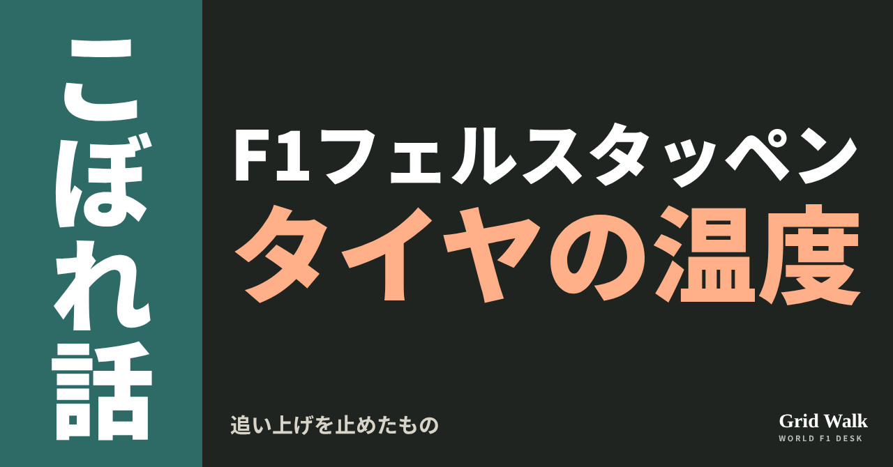<button class="cp dl" data-img="img/red-bull-tyre-window-phenomenon-20261113.png" data-name="red-bull-tyre-window-phenomenon-20261113_見出し画像.png">ダウンロード</button></li>
<li class="st"><div class="hd"><span class="no">2</span><b>タイトル</b></div><div class="bx" id="p1t">フェルスタッペンの追い上げを止めたのは？　タイヤの温度と高めの車高</div><button class="cp" data-plain="p1t">タイトルをコピー</button></li>
<li class="st"><div class="hd"><span class="no">3</span><b>本文</b></div><div class="bx tall" id="p1r"><p>21番グリッドから2位。サンパウロGPのマックス・フェルスタッペン（レッドブル）の追い上げは見事でしたが、優勝したランド・ノリス（マクラーレン）には14秒602届きませんでした（FIA正式結果）。最後のひと押しは、なぜ出なかったのか。RacingNews365（オランダ）の技術解説者パオロ・フィリセッティが11月12日、ひとつの答えを出しています。タイヤが、いちばんよく働く温度の幅から出たり入ったりしていた、という見方です。</p><p>元の分析記事と、温度の幅や車高を説明したルールブックへのリンクはサイトで → <a href="https://f1gridwalk.github.io/lens/red-bull-tyre-window-phenomenon-20261113/?utm_source=note&amp;utm_campaign=red-bull-tyre-window-phenomenon-20261113">https://f1gridwalk.github.io/lens/red-bull-tyre-window-phenomenon-20261113/?utm_source=note&amp;utm_campaign=red-bull-tyre-window-phenomenon-20261113</a></p><h2>インターでは快走、ソフトで急に</h2><p>記事によると、フェルスタッペンはインターミディエイトでの最初のスティントがすばらしかったものの、ソフトに替えたあと、車全体の性能が急に落ちたと伝えました。車の安定と一貫性が落ちた、という訴えです。記事はこれを本人の言葉としては引いていません。本人のレース後の言葉は、コラム https://f1gridwalk.github.io/lens/verstappen-p21-to-p2-20261109/ で紹介しています。</p><p>フィリセッティによると、タイヤがよく働く温度の範囲から、ときどき外れてしまう現象は、この日曜のレッドブルほどはっきり出たことは、おそらくなかったといいます。記事の見出しは、フェルスタッペンをこの現象の目立つ被害者と呼んでいます。温度の幅のしくみはルールブック https://f1gridwalk.github.io/deep/rules/operating-window/ で。</p><h2>戻ってきた症状と、悪天候のための車高</h2><p>記事によると、RB22には、今季これまでに解決したように見えていた症状が戻っていました。コーナーの途中で、おもに後ろが落ち着かない。曲がり始めではアンダーステア、曲がりくねった区間の立ち上がりではオーバーステア。後ろが何度もスナップ（急に滑る動き）したのは、使えるグリップが消えていく印だった、と記事は見ています。原因は路面に残った水ではなく、車の姿勢が安定しないことで、ダウンフォースが失われたことだといいます。</p><p>理由のひとつは、インテルラゴスに合わせて選んだセッティングです。天気が悪かったため車は高めの車高で走り、床下で生まれるダウンフォースが大きく減った。そのため、空気の力がかかる中心（センター・オブ・プレッシャー）が前に移って、後ろが軽くなった。それまでバランスを一定に保ってきた改良も、この条件ではうまく働かなかった、と記事は書いています。車高と床下の関係は https://f1gridwalk.github.io/deep/rules/ride-height/ で。</p><h2>攻めきる自信が持てなかった</h2><p>さらに、路面温度が上下し、レースが進んで車が軽くなるにつれて、タイヤのたれで、ハンドリングが急に大きく変わったといいます。グリップが一定しない路面のため、ドライバー、とくにフェルスタッペンが車を正確でないと感じたと考えるのは妥当だ、というのが記事の見方です。その結果、限界まで攻める自信が持てず、残っていた速さを引き出せなかった。優勝を争うには、それが必要だった、と結んでいます。</p><p>これはレッドブルの説明ではなく、フィリセッティ自身の分析です。記事は、チームやフェルスタッペンの言葉を引いていません。同じレースでは、メルセデス（ https://f1gridwalk.github.io/lens/mercedes-strange-spins-20261109/ ）やフェラーリ（ https://f1gridwalk.github.io/lens/ferrari-sf26-investigation-20261110/ ）も、タイヤの扱いに苦しんだと話していました。編集部としては、雨のために車高を上げるという条件がない週末に同じ症状が出るかどうかが、この分析を確かめる手がかりになると見ています。</p><p><strong>ソフトに替えてからの失速。あなたは、タイヤの温度と高めの車高、どちらが大きかったと思いますか？</strong></p><p>━━━━━━━━━━</p><p><strong>F1 Grid Walk では、世界のF1ニュースを毎日日本語でまとめています。</strong></p><p>海外の記事の要約を、毎日載せています。</p><p><a href="https://f1gridwalk.github.io/">https://f1gridwalk.github.io/</a></p><p>ほかの海外記事も読みたい方は、F1 Grid Walkへ。</p><p><a href="https://f1gridwalk.github.io/lens/red-bull-tyre-window-phenomenon-20261113/">https://f1gridwalk.github.io/lens/red-bull-tyre-window-phenomenon-20261113/</a></p><p>━━━━━━━━━━</p><p><a href="https://racingnews365.com/why-max-verstappen-was-high-profile-victim-of-red-bull-phenomenon-in-brazil">出典：RacingNews365（オランダ）</a></p><p><a href="https://www.fia.com/system/files/decision-document/2026_sao_paulo_grand_prix_-_final_race_classification.pdf">出典：FIA（フランス）</a></p></div><button class="cp" data-rich="p1r">本文をコピー</button></li>
<li class="st"><div class="hd"><span class="no">4</span><b>ハッシュタグ</b></div><div class="bx" id="p1h">#F1 #F1jp #フェルスタッペン #レッドブル #サンパウロGP #タイヤ #F1技術 #F1こぼれ話 #OFFGRID</div><button class="cp" data-plain="p1h">タグをコピー</button></li>
</ol><h3 class="xh">X</h3><ol class="steps">
<li class="st im"><div class="hd"><b>X用の画像</b><em>画像</em></div>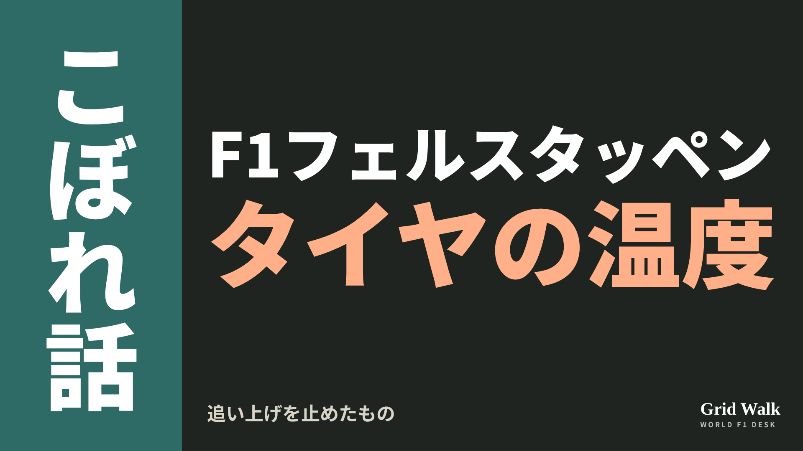<button class="cp dl" data-img="img/x_red-bull-tyre-window-phenomenon-20261113.png" data-name="x_red-bull-tyre-window-phenomenon-20261113.png">ダウンロード</button></li>
<li class="st"><div class="hd"><b>① noteをシェアするときの文</b></div><div class="bx" id="p1x0">21番手から2位まで上がったフェルスタッペンを止めたのは何か。RacingNews365の技術解説者は、タイヤの温度と、悪天候で高めにした車高を挙げました。noteにまとめました #F1jp #フェルスタッペン</div><button class="cp" data-plain="p1x0">コピー</button></li>
<li class="st"><div class="hd"><b>② ①への返信</b></div><div class="bx" id="p1x1">ほかの海外記事も読みたい方は、F1 Grid Walkへ。
https://f1gridwalk.github.io/lens/red-bull-tyre-window-phenomenon-20261113/?utm_source=x&amp;utm_campaign=red-bull-tyre-window-phenomenon-20261113</div><button class="cp" data-plain="p1x1">コピー</button></li>
<li class="st"><div class="hd"><b>③ ②への返信</b></div><div class="bx" id="p1x2">毎日の海外F1ニュースは、日本語でこちらにまとめています。
https://f1gridwalk.github.io/</div><button class="cp" data-plain="p1x2">コピー</button></li>
</ol></section><section class="part" id="p2"><h2><span class="tag">OFF GRID</span>祖父エマーソンも乗ったローラへ　孫エンツォがフォーミュラE参戦</h2><p class="sub">サイトに公開：11:24</p><ol class="steps">
<li class="st im"><div class="hd"><span class="no">1</span><b>見出し画像</b><em>画像</em></div>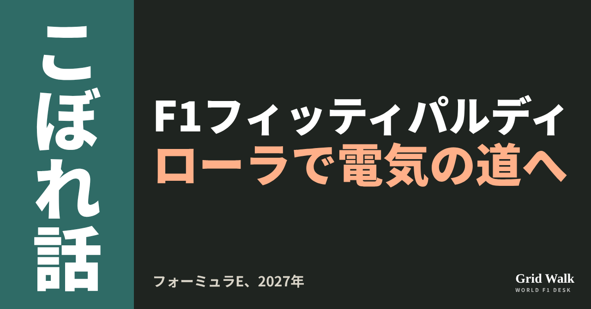<button class="cp dl" data-img="img/lola-formula-e-2027-20261113.png" data-name="lola-formula-e-2027-20261113_見出し画像.png">ダウンロード</button></li>
<li class="st"><div class="hd"><span class="no">2</span><b>タイトル</b></div><div class="bx" id="p2t">祖父エマーソンも乗ったローラへ　孫エンツォがフォーミュラE参戦</div><button class="cp" data-plain="p2t">タイトルをコピー</button></li>
<li class="st"><div class="hd"><span class="no">3</span><b>本文</b></div><div class="bx tall" id="p2r"><p>フォーミュラEのローラが、次のシーズンの2人を決めました。11月11日にロバート・シュワルツマン、12日にエンツォ・フィッティパルディ。どちらもF1チームの育成出身で、フォーミュラEのレースは初めてです（RacingNews365／イギリス）。そしてフィッティパルディの祖父は、ローラの車で走った元F1王者です。</p><p>2人の発表を伝えた各国の元記事と、ヤマハの発表へのリンクはサイトで → <a href="https://f1gridwalk.github.io/lens/lola-formula-e-2027-20261113/?utm_source=note&amp;utm_campaign=lola-formula-e-2027-20261113">https://f1gridwalk.github.io/lens/lola-formula-e-2027-20261113/?utm_source=note&amp;utm_campaign=lola-formula-e-2027-20261113</a></p><h2>シュワルツマン「本当に恋しかった」</h2><p>シュワルツマンは26歳。2019年のF3王者で、2021年はF2で2位でした。フェラーリの育成出身で、F1ではリザーブも務め、2025年にはインディカーで、初めてのインディ500でポールを取りました（RacingNews365）。ただ、プレマのインディカーチームが2026年1月に事実上活動をやめてから走っていない、とThe Race（イギリス）が6月に伝えています。</p><blockquote><p>「WECとフォーミュラEの両方をこなすので、休みのない、きついシーズンになります。でも正直、2026年はレースをしていなかったので、本当に恋しかった」「GEN4の車はまさに怪物で、運転がすごく楽しい」（シュワルツマン、RacingNews365／イギリス）</p></blockquote><p>2027年はプジョーからWECにも出ます（RacingNews365）。ローラのマーク・プレストン代表はこう話します。</p><blockquote><p>「新人として、実績のあるベテランたちを相手に、本当の意味での学びの道のりが待っています。それでも、いろいろなカテゴリーにすぐ順応してきた力があり、GEN4の時代にとても有望です」（プレストン代表、RacingNews365／イギリス）</p></blockquote><h2>孫が乗る、祖父のローラ</h2><p>フィッティパルディはブラジルの25歳。イタリアF4の王者で、F2では2勝。2023年にはレッドブルの育成ドライバーでした。今年はアメリカのインディNXTで4勝し、ランキング2位でした（RacingNews365）。</p><p>祖父は、F1で2度王者になったエマーソン・フィッティパルディです（Grande Prêmio）。RacingNews365によると、エマーソンは1970年、ブラジルのスポーツカー選手権でローラT210に乗り、兄のウィルソン（エンツォの大おじ）はローラT70 Mk3Bで競いました。エマーソンは1988年、アメリカのCARTでもローラT87/00に乗っています。</p><blockquote><p>「ローラはモータースポーツで、とても多くの歴史と伝統を持つ名前です。ヤマハとともに歩むこの新しい章の一員になれるのは光栄です」「マドリードでの次のテストで、車に乗るのが待ちきれません」（フィッティパルディ、RacingNews365／イギリス）</p></blockquote><p>テストはマドリードのハラマで11月16〜20日です（FIA）。2人はもう新しい車T004を走らせています（RacingNews365）。</p><h2>ヤマハは引き続き技術パートナー</h2><p>ローラは2024年3月からヤマハ発動機と組み、フォーミュラEの電動パワートレインを開発してきました。2025年4月には、GEN4の車になる2026/27年の第13シーズンからも提携を続けると発表しています（ヤマハ発動機、フォーミュラE公式）。今回の発表でもヤマハは技術パートナーです（RacingNews365）。運営を担ってきたドイツのABTとは前のシーズンかぎりで別れました（RacingNews365）。前のドライバーのルーカス・ディ・グラッシは引退し、もう1人は日産に移り（RACER／アメリカ）、新人2人の組み合わせになりました。</p><p><strong>F1の育成を出たドライバーがほかのシリーズで走るなら、あなたはどこで見てみたいですか？</strong></p><p>━━━━━━━━━━</p><p><strong>F1 Grid Walk では、世界のF1ニュースを毎日日本語でまとめています。</strong></p><p>海外の記事の要約を、毎日載せています。</p><p><a href="https://f1gridwalk.github.io/">https://f1gridwalk.github.io/</a></p><p>ほかの海外記事も読みたい方は、F1 Grid Walkへ。</p><p><a href="https://f1gridwalk.github.io/lens/lola-formula-e-2027-20261113/">https://f1gridwalk.github.io/lens/lola-formula-e-2027-20261113/</a></p><p>━━━━━━━━━━</p><p><a href="https://racingnews365.com/former-red-bull-junior-completes-lola-2027-formula-e-driver-line-up">出典：RacingNews365（イギリス）</a></p><p><a href="https://racingnews365.com/former-ferrari-f1-hopeful-completes-demanding-lola-formula-e-switch">出典：RacingNews365（イギリス）</a></p><p><a href="https://grandepremio.com/en/formula-e/enzo-fittipaldi-leaves-indycar-path-for-formula-e-deal-with-lola-in-2027/">出典：Grande Prêmio（ブラジル）</a></p><p><a href="https://www.the-race.com/formula-e/three-rookies-vying-for-champion-di-grassi-formula-e-seat/">出典：The Race（イギリス）</a></p><p><a href="https://www.fia.com/news/circuito-de-madrid-jarama-race-host-formula-e-pre-season-testing-gen4-era">出典：FIA（国際）</a></p><p><a href="https://global.yamaha-motor.com/news/2025/0410/formulae.html">出典：ヤマハ発動機（日本）</a></p><p><a href="https://www.fiaformulae.com/en/news/523403">出典：フォーミュラE公式（国際）</a></p><p><a href="https://racingnews365.com/lola-declare-new-formula-e-direction-after-major-partner-split">出典：RacingNews365（イギリス）</a></p><p><a href="https://racer.com/2026/11/10/lola-formula-e-team-signs-shwartzman-as-first-driver-for-2027-season">出典：RACER（アメリカ）</a></p></div><button class="cp" data-rich="p2r">本文をコピー</button></li>
<li class="st"><div class="hd"><span class="no">4</span><b>ハッシュタグ</b></div><div class="bx" id="p2h">#F1 #F1jp #フォーミュラE #ローラ #シュワルツマン #フィッティパルディ #ヤマハ #F1こぼれ話 #OFFGRID</div><button class="cp" data-plain="p2h">タグをコピー</button></li>
</ol><h3 class="xh">X</h3><ol class="steps">
<li class="st im"><div class="hd"><b>X用の画像</b><em>画像</em></div>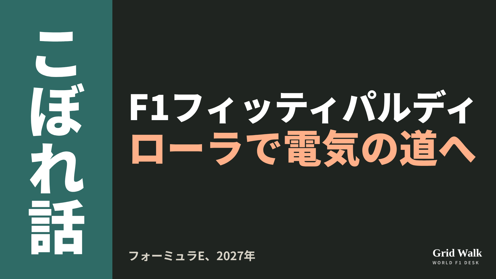<button class="cp dl" data-img="img/x_lola-formula-e-2027-20261113.png" data-name="x_lola-formula-e-2027-20261113.png">ダウンロード</button></li>
<li class="st"><div class="hd"><b>① noteをシェアするときの文</b></div><div class="bx" id="p2x0">祖父エマーソンも乗ったローラで、孫のエンツォ・フィッティパルディがフォーミュラEへ。2027年はシュワルツマンと組みます。noteにまとめました #F1jp #フォーミュラE</div><button class="cp" data-plain="p2x0">コピー</button></li>
<li class="st"><div class="hd"><b>② ①への返信</b></div><div class="bx" id="p2x1">ほかの海外記事も読みたい方は、F1 Grid Walkへ。
https://f1gridwalk.github.io/lens/lola-formula-e-2027-20261113/?utm_source=x&amp;utm_campaign=lola-formula-e-2027-20261113</div><button class="cp" data-plain="p2x1">コピー</button></li>
<li class="st"><div class="hd"><b>③ ②への返信</b></div><div class="bx" id="p2x2">毎日の海外F1ニュースは、日本語でこちらにまとめています。
https://f1gridwalk.github.io/</div><button class="cp" data-plain="p2x2">コピー</button></li>
</ol></section><section class="part" id="p3"><h2><span class="tag">OFF GRID</span>アウディ、2台そろっての入賞は20戦で0回　マクニッシュの説明</h2><p class="sub">サイトに公開：11:20</p><ol class="steps">
<li class="st im"><div class="hd"><span class="no">1</span><b>見出し画像</b><em>画像</em></div>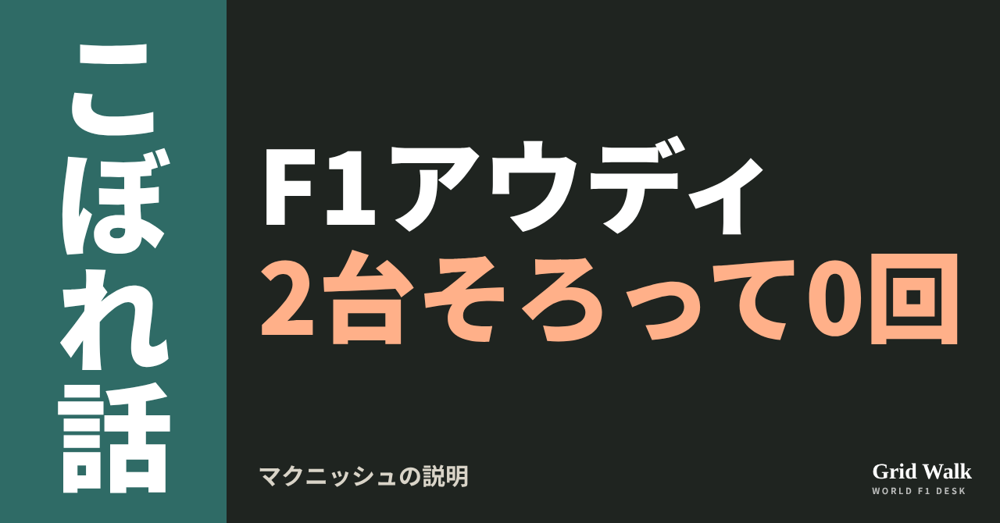<button class="cp dl" data-img="img/audi-no-double-points-20261113.png" data-name="audi-no-double-points-20261113_見出し画像.png">ダウンロード</button></li>
<li class="st"><div class="hd"><span class="no">2</span><b>タイトル</b></div><div class="bx" id="p3t">アウディ、2台そろっての入賞は20戦で0回　マクニッシュの説明</div><button class="cp" data-plain="p3t">タイトルをコピー</button></li>
<li class="st"><div class="hd"><span class="no">3</span><b>本文</b></div><div class="bx tall" id="p3r"><p>アウディは今季ここまで20戦。そのうち、ニコ・ヒュルケンベルグとガブリエル・ボルトレートが2台そろって入賞したレースは、一度もありません。スプリントでも、2台そろって点を取ったことはありません（F1公式の結果）。2人は14点ずつなのに、点を取るレースはいつもばらばらです。ドイツのMotorsport-Totalによると、レーシングディレクターのアラン・マクニッシュが、その理由を説明しました（要約は https://f1gridwalk.github.io/news/de-motorsporttotal-mcnish-audi-never-double-points/ ）。</p><p>元の記事と、F1公式の2人の結果表へのリンクはサイトで → <a href="https://f1gridwalk.github.io/lens/audi-no-double-points-20261113/?utm_source=note&amp;utm_campaign=audi-no-double-points-20261113">https://f1gridwalk.github.io/lens/audi-no-double-points-20261113/?utm_source=note&amp;utm_campaign=audi-no-double-points-20261113</a></p><h2>入賞はいつも1台だけ</h2><p>F1公式の結果表で、アウディに点が付いたのは20戦のうち9戦です。ボルトレートがオーストラリア（9位）、イギリス、ベルギー、メキシコシティ（いずれも8位）の4戦。ヒュルケンベルグがハンガリー（9位）、オランダ（8位）、スペイン（10位）、シンガポール（8位。スプリントでも7位で2点）、サンパウロ（10位）の5戦。どの回も、もう1台は圏外でした。</p><p>目立つのは11位の多さです。F1公式の結果表を編集部が数えると、決勝での2人の11位は合わせて10回（5回ずつ）。あと一つ前なら1点というゴールが、2台でこれだけありました。ドライバーズ順位は、ボルトレートが14位、ヒュルケンベルグが15位で、どちらも14点です（F1公式）。</p><h2>上位4チームで8位まで</h2><p>マクニッシュは、どちらかがいつも後ろにいるわけではない、と話します。</p><blockquote><p>「2人の差はとても小さい」「何よりも状況しだいだ。どこで予選を終えるか、われわれの作戦がどうはまるか」（マクニッシュ、Motorsport-Total／ドイツ）</p></blockquote><blockquote><p>「最後には、一人が前で、もう一人が後ろにいるように見えることがある。でも、そうではない」（マクニッシュ、Motorsport-Total／ドイツ）</p></blockquote><p>例に挙げたのはメキシコシティGPです。記事によると、ボルトレートは最初のフリー走行で技術的な問題に苦しみながら、決勝で入賞。ヒュルケンベルグは途中までトップ10を走っていましたが、レースが中断されたあと、点を逃しました。</p><blockquote><p>「それまでニコは順位を守っていた。でも、ときには状況が変わってしまう」（マクニッシュ、Motorsport-Total／ドイツ）</p></blockquote><p>そして、2台がそろわないいちばんの理由として、上の4チームを挙げました。</p><blockquote><p>「上位4チームが、基本的に1位から8位までを自分たちで分け合っているからだ」（マクニッシュ、Motorsport-Total／ドイツ）</p></blockquote><p>だから自分たちが争うのは「たいてい9位と10位」で、中団のチームが2台をトップ10に入れるのは「非常に考えにくい」と言います。記事は、これはアウディだけでなく、直接のライバルのレーシングブルズとアルピーヌにも当てはまる、と書いています。</p><p>先週末のサンパウロGPも、そのとおりの形でした。FIAの正式結果では、上位4チームの8台がすべて9位までに入り、残りの席にレーシングブルズのリアム・ローソン（7位）とヒュルケンベルグ（10位）が入りました。雨の予選で2列目に並んだ2人のレースは https://f1gridwalk.github.io/lens/lawson-hulkenberg-second-row-20261109/ に。</p><h2>性格のちがう2人</h2><blockquote><p>「結果を出せると分かっているドライバーが2人いる。性格はちがうし、気持ちの動き方もちがう。でも共通点が一つある。2人ともファイターだ。そして2人とも、われわれがどう戦わなければならないかを分かっている」（マクニッシュ、Motorsport-Total／ドイツ）</p></blockquote><p>記事によると、マクニッシュは、チームは一人だけに合わせた形ではなく、2人ともに居場所がある、とも話しました。ヒュルケンベルグとボルトレートの仲がいいことも、強みに数えています。</p><blockquote><p>「どこのチームでもそうだとは思わない。それがわれわれの強みの一つだと思う」（マクニッシュ、Motorsport-Total／ドイツ）</p></blockquote><p>コンストラクターズ順位では、アウディは28点で8位。7位のハースとは3点差です（F1公式）。編集部としては、ハースを抜くには、1台の入賞に加えて、もう1台の1点、2点が効いてくると見ています。次はラスベガスGPです。</p><p><strong>アウディが2台そろって入賞する日、今季のうちに来ると思いますか？</strong></p><p>━━━━━━━━━━</p><p><strong>F1 Grid Walk では、世界のF1ニュースを毎日日本語でまとめています。</strong></p><p>海外の記事の要約を、毎日載せています。</p><p><a href="https://f1gridwalk.github.io/">https://f1gridwalk.github.io/</a></p><p>ほかの海外記事も読みたい方は、F1 Grid Walkへ。</p><p><a href="https://f1gridwalk.github.io/lens/audi-no-double-points-20261113/">https://f1gridwalk.github.io/lens/audi-no-double-points-20261113/</a></p><p>━━━━━━━━━━</p><p><a href="https://www.formel1.de/news/news/2026-11-12/warum-audi-in-der-formel-1-nie-doppelt-punktet-mcnish-erklaert-das-problem">出典：Motorsport-Total.com（Formel1.de 掲載）（ドイツ）</a></p><p><a href="https://de.motorsport.com/f1/news/warum-audi-in-der-formel-1-nie-doppelt-punktet-mcnish-erklaert-das-problem-26111201/3456994/">出典：Motorsport.com（ドイツ版）（ドイツ）</a></p><p><a href="https://www.formula1.com/en/results/2026/drivers/NICHUL01/nico-hulkenberg">出典：Formula1.com（イギリス）</a></p><p><a href="https://www.formula1.com/en/results/2026/drivers/GABBOR01/gabriel-bortoleto">出典：Formula1.com（イギリス）</a></p><p><a href="https://www.formula1.com/en/results/2026/team/Audi">出典：Formula1.com（イギリス）</a></p><p><a href="https://www.formula1.com/en/results/2025/races/1296/singapore/sprint-results">出典：Formula1.com（イギリス）</a></p><p><a href="https://www.formula1.com/en/results/2026/team">出典：Formula1.com（イギリス）</a></p><p><a href="https://www.fia.com/system/files/decision-document/2026_sao_paulo_grand_prix_-_final_race_classification.pdf">出典：FIA（国際）</a></p></div><button class="cp" data-rich="p3r">本文をコピー</button></li>
<li class="st"><div class="hd"><span class="no">4</span><b>ハッシュタグ</b></div><div class="bx" id="p3h">#F1 #F1jp #アウディ #ヒュルケンベルグ #ボルトレート #マクニッシュ #サンパウロGP #F1こぼれ話 #OFFGRID</div><button class="cp" data-plain="p3h">タグをコピー</button></li>
</ol><h3 class="xh">X</h3><ol class="steps">
<li class="st im"><div class="hd"><b>X用の画像</b><em>画像</em></div>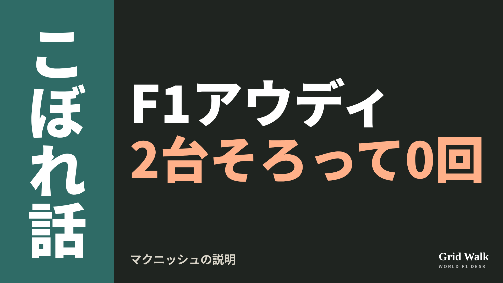<button class="cp dl" data-img="img/x_audi-no-double-points-20261113.png" data-name="x_audi-no-double-points-20261113.png">ダウンロード</button></li>
<li class="st"><div class="hd"><b>① noteをシェアするときの文</b></div><div class="bx" id="p3x0">アウディは今季20戦で、2台そろって入賞したレースが0回。マクニッシュは、上位4チームが8位までを分け合っているからだと説明しました。noteにまとめました #F1jp #アウディ</div><button class="cp" data-plain="p3x0">コピー</button></li>
<li class="st"><div class="hd"><b>② ①への返信</b></div><div class="bx" id="p3x1">ほかの海外記事も読みたい方は、F1 Grid Walkへ。
https://f1gridwalk.github.io/lens/audi-no-double-points-20261113/?utm_source=x&amp;utm_campaign=audi-no-double-points-20261113</div><button class="cp" data-plain="p3x1">コピー</button></li>
<li class="st"><div class="hd"><b>③ ②への返信</b></div><div class="bx" id="p3x2">毎日の海外F1ニュースは、日本語でこちらにまとめています。
https://f1gridwalk.github.io/</div><button class="cp" data-plain="p3x2">コピー</button></li>
</ol></section><section class="part" id="p4"><h2><span class="tag">OFF GRID</span>アントネッリはいずれフェラーリへ？ シュタイナー「たぶん10年先」</h2><p class="sub">サイトに公開：11:21</p><ol class="steps">
<li class="st im"><div class="hd"><span class="no">1</span><b>見出し画像</b><em>画像</em></div>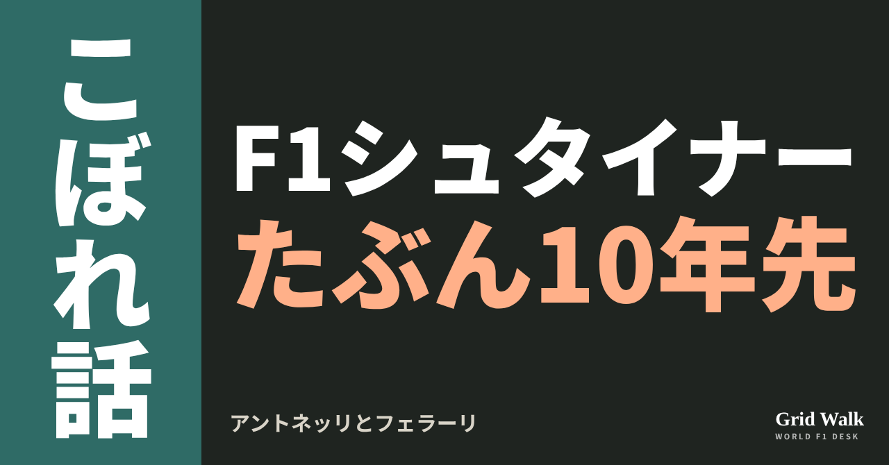<button class="cp dl" data-img="img/steiner-antonelli-ferrari-20261113.png" data-name="steiner-antonelli-ferrari-20261113_見出し画像.png">ダウンロード</button></li>
<li class="st"><div class="hd"><span class="no">2</span><b>タイトル</b></div><div class="bx" id="p4t">アントネッリはいずれフェラーリへ？ シュタイナー「たぶん10年先」</div><button class="cp" data-plain="p4t">タイトルをコピー</button></li>
<li class="st"><div class="hd"><span class="no">3</span><b>本文</b></div><div class="bx tall" id="p4r"><p>20歳で王者になったアンドレア・キミ・アントネッリは、いつかフェラーリで走るのか。元ハース代表のギュンター・シュタイナーは、イギリスのRacingNews365（11月11日）の取材に、走ると答えました。ただし、時期の見立ては10年先です。</p><p>RacingNews365の元の記事と、シュタイナーのほかの発言の要約へのリンクはサイトで → <a href="https://f1gridwalk.github.io/lens/steiner-antonelli-ferrari-20261113/?utm_source=note&amp;utm_campaign=steiner-antonelli-ferrari-20261113">https://f1gridwalk.github.io/lens/steiner-antonelli-ferrari-20261113/?utm_source=note&amp;utm_campaign=steiner-antonelli-ferrari-20261113</a></p><p>翌12日にはPlanetF1やCrash.net（ともにイギリス）が、RacingNews365への発言として伝えています。あくまで予想で、RacingNews365によると、アントネッリはメルセデスがオプションを使い、少なくとも2027年末まで契約があります。シュタイナーはイタリアのメラーノ生まれで、今はMotoGPのテック3でCEOを務めています（MotoGP公式）。</p><h2>「たぶん10年先だ」</h2><p>フェラーリにいるアントネッリを想像できるかと聞かれ、シュタイナーはこう答えました。</p><blockquote><p>「なぜ彼は私たちのために走らないのか、と聞く人もいる」「イタリアにとって唯一完璧でないのは、イタリア人の王者がフェラーリで走っていないことだ」（シュタイナー、RacingNews365／イギリス）</p></blockquote><blockquote><p>「でも、いつかは、と思う。考えてみてほしい、彼は20歳だ」「とても若い。だから私の意見では、いつか彼はフェラーリで走る」「短期で？ いや。たぶん10年先だ」（同）</p></blockquote><p>続けて、こうも言っています。</p><blockquote><p>「私なら逆に考える。彼ら（フェラーリ）は彼を手に入れる。彼がその気なら、明日にでも行ける」（同）</p></blockquote><h2>メルセデスは強いが、支配はしていない</h2><blockquote><p>「でもメルセデスは、この規則でとても強いが、支配はしていない」「つまり彼は『一番いいマシンがあるんだから、勝てばいい』とは言われない。いいマシンがあって、今いちばんだから勝つんだ」「でも、この先もいくつか世界王座を獲ると、かなり確信している」（シュタイナー、RacingNews365／イギリス）</p></blockquote><h2>本人は「今いる場所にとても満足」</h2><p>アントネッリ本人は9月3日、イタリアGPを前にモンツァで記者に聞かれ、こう話していました（Crash.net）。</p><blockquote><p>「僕もイタリア人だから、僕たちがどれだけ感情的で、物事に熱くなりやすいか分かっている。だから、こういう話はいつも出てくる」「でも結局のところ、フェラーリは大きくて素晴らしいブランドだけど、僕は今いる場所にとても満足している」（アントネッリ、Crash.net／イギリス）</p></blockquote><blockquote><p>「メルセデスにはとても満足している。子どものころからチャンスをくれたのは彼らだし、返したいものがたくさんあると感じている」（同）</p></blockquote><p>シュタイナーは11月3日のRacingNews365の記事でも、イタリアはフェラーリを応援するのに慣れているとして、こう話していました。</p><blockquote><p>「キミは、国から受けるべき敬意を受けていないと、ときどき思う」（シュタイナー、RacingNews365／イギリス）</p></blockquote><p>11日にはオランダのF1Maximaalが、ポッドキャスト「Red Flags」でシュタイナーが、今のフェラーリにはフェルスタッペンが合うかもしれないという話にうなずいたと伝えています（要約は https://f1gridwalk.github.io/news/nl-f1maximaal-steiner-verstappen-ferrari-solution/ 。今回の発言の要約は https://f1gridwalk.github.io/news/en-planetf1-steiner-antonelli-ferrari-ten-years/ ）。</p><p>編集部としては、「たぶん10年先」と「明日にでも行ける」が同じ答えの中に並んでいる点に目が行きます。時期は本人の気持ち次第、という見立てとも読めます。10年たっても、アントネッリはまだ30歳前後です。</p><p><strong>アントネッリがフェラーリに乗る日は、来ると思いますか？ 来るとしたら、何歳のときでしょう？</strong></p><p>━━━━━━━━━━</p><p><strong>F1 Grid Walk では、世界のF1ニュースを毎日日本語でまとめています。</strong></p><p>海外の記事の要約を、毎日載せています。</p><p><a href="https://f1gridwalk.github.io/">https://f1gridwalk.github.io/</a></p><p>ほかの海外記事も読みたい方は、F1 Grid Walkへ。</p><p><a href="https://f1gridwalk.github.io/lens/steiner-antonelli-ferrari-20261113/">https://f1gridwalk.github.io/lens/steiner-antonelli-ferrari-20261113/</a></p><p>━━━━━━━━━━</p><p><a href="https://racingnews365.com/kimi-antonelli-handed-verdict-over-future-ferrari-drive-he-could-go-tomorrow">出典：RacingNews365（イギリス）</a></p><p><a href="https://www.planetf1.com/news/kimi-antonelli-ferrari-guenther-steiner-predicts-world-champion-future">出典：PlanetF1（イギリス）</a></p><p><a href="https://www.crash.net/f1/news/1110096/1/kimi-antonelli-10-years-out-ferrari-f1-move-reckons-guenther-steiner">出典：Crash.net（イギリス）</a></p><p><a href="https://www.crash.net/f1/news/1103416/1/kimi-antonelli-addresses-inevitable-ferrari-f1-links-ahead-italian-gp">出典：Crash.net（イギリス）</a></p><p><a href="https://www.motogp.com/pt/news/2025/09/05/guenther-steiner-leads-acquisition-of-tech3-motogp-team/758123">出典：MotoGP公式（国際）</a></p><p><a href="https://racingnews365.com/exclusive-guenther-steiner-calls-on-italy-to-finally-show-kimi-antonelli-love-and-respect">出典：RacingNews365（イギリス）</a></p><p><a href="https://www.f1maximaal.nl/formule-1/steiner-twijfelt-aan-hamilton-bij-ferrari-en-wijst-naar-verstappen-hij-zou-niet-stoppen">出典：F1Maximaal（オランダ）</a></p></div><button class="cp" data-rich="p4r">本文をコピー</button></li>
<li class="st"><div class="hd"><span class="no">4</span><b>ハッシュタグ</b></div><div class="bx" id="p4h">#F1 #F1jp #アントネッリ #シュタイナー #フェラーリ #メルセデス #F1王者 #F1こぼれ話 #OFFGRID</div><button class="cp" data-plain="p4h">タグをコピー</button></li>
</ol><h3 class="xh">X</h3><ol class="steps">
<li class="st im"><div class="hd"><b>X用の画像</b><em>画像</em></div>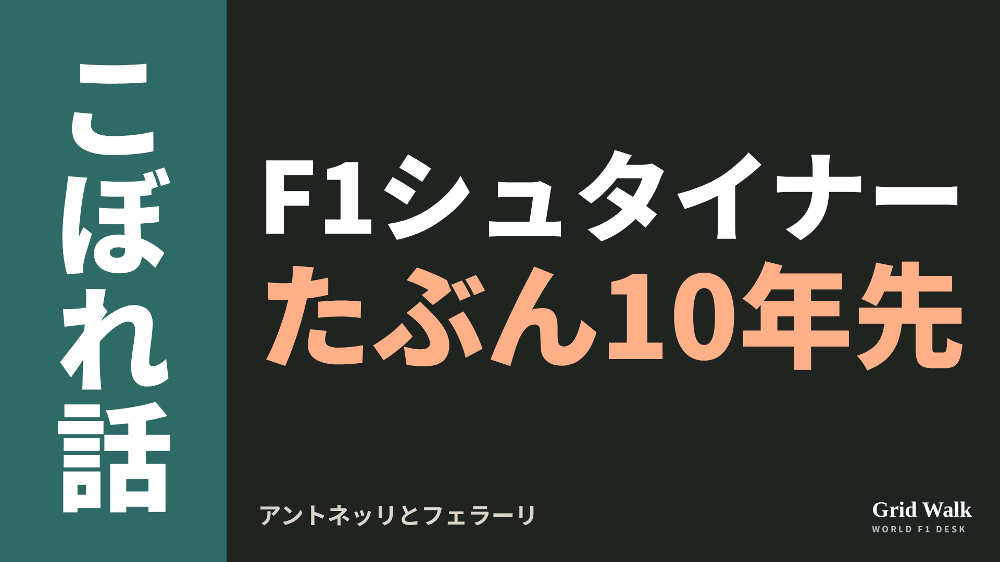<button class="cp dl" data-img="img/x_steiner-antonelli-ferrari-20261113.png" data-name="x_steiner-antonelli-ferrari-20261113.png">ダウンロード</button></li>
<li class="st"><div class="hd"><b>① noteをシェアするときの文</b></div><div class="bx" id="p4x0">アントネッリはいずれフェラーリへ？　シュタイナーは「たぶん10年先」、それでも「彼がその気なら明日にでも行ける」。noteにまとめました #F1jp #アントネッリ</div><button class="cp" data-plain="p4x0">コピー</button></li>
<li class="st"><div class="hd"><b>② ①への返信</b></div><div class="bx" id="p4x1">ほかの海外記事も読みたい方は、F1 Grid Walkへ。
https://f1gridwalk.github.io/lens/steiner-antonelli-ferrari-20261113/?utm_source=x&amp;utm_campaign=steiner-antonelli-ferrari-20261113</div><button class="cp" data-plain="p4x1">コピー</button></li>
<li class="st"><div class="hd"><b>③ ②への返信</b></div><div class="bx" id="p4x2">毎日の海外F1ニュースは、日本語でこちらにまとめています。
https://f1gridwalk.github.io/</div><button class="cp" data-plain="p4x2">コピー</button></li>
</ol></section><section class="part" id="p5"><h2><span class="tag">OFF GRID</span>フェルスタッペンの祝福に演技も？　独記者が語るメキシコの肩車のうわさ</h2><p class="sub">サイトに公開：11:23</p><ol class="steps">
<li class="st im"><div class="hd"><span class="no">1</span><b>見出し画像</b><em>画像</em></div>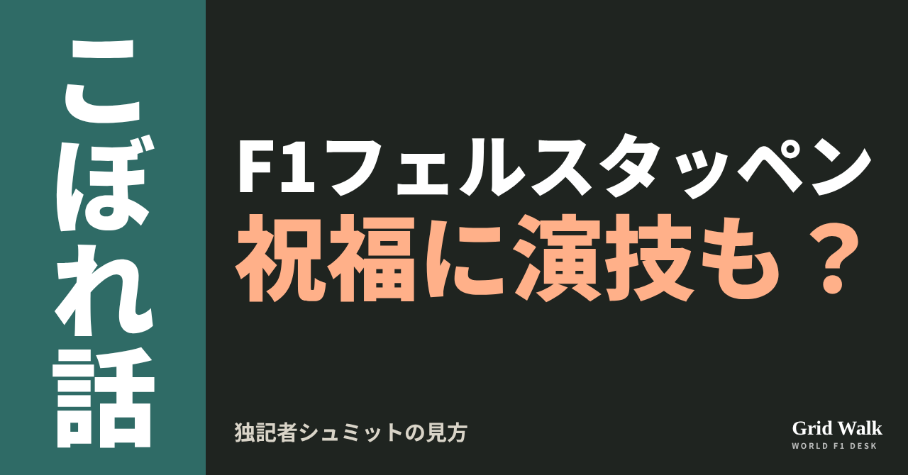<button class="cp dl" data-img="img/schmidt-verstappen-half-act-20261113.png" data-name="schmidt-verstappen-half-act-20261113_見出し画像.png">ダウンロード</button></li>
<li class="st"><div class="hd"><span class="no">2</span><b>タイトル</b></div><div class="bx" id="p5t">フェルスタッペンの祝福に演技も？　独記者が語るメキシコの肩車のうわさ</div><button class="cp" data-plain="p5t">タイトルをコピー</button></li>
<li class="st"><div class="hd"><span class="no">3</span><b>本文</b></div><div class="bx tall" id="p5r"><p>メキシコシティGPの表彰台で、優勝したフェルスタッペン（レッドブル）と2位のハミルトン（フェラーリ）が、3位で王座を決めたアントネッリ（メルセデス）を肩に担ぎ上げました。あの場面に、ドイツの記者が別の読み方を持ち出しています。</p><p>元のポッドキャストを伝えた記事と、アントネッリ本人の話の出典はサイトで → <a href="https://f1gridwalk.github.io/lens/schmidt-verstappen-half-act-20261113/?utm_source=note&amp;utm_campaign=schmidt-verstappen-half-act-20261113">https://f1gridwalk.github.io/lens/schmidt-verstappen-half-act-20261113/?utm_source=note&amp;utm_campaign=schmidt-verstappen-half-act-20261113</a></p><p>オランダのF1Maximaalが11月11日に伝えたところでは、ドイツの自動車誌auto motor und sportのポッドキャスト「フォルメル・シュミット」で、ドイツ人記者のミハエル・シュミットがこう話しました。</p><h2>肩車は乗り気でなかった？</h2><p>F1Maximaalは、フェルスタッペンは仲のいいアントネッリのことを喜んでもいるとしたうえで、シュミットはその裏に少し演技が混じっていると見ている、と書いています。シュミットの言葉はこうです。</p><blockquote><p>「マックス・フェルスタッペンは、アントネッリが世界王者になったことを自分も喜んでいるように見せている」（シュミット、F1Maximaal／オランダ）</p></blockquote><blockquote><p>「メキシコでは、フェルスタッペンとハミルトンがアントネッリを肩に担ぎ上げた場面があった。うわさでは、フェルスタッペンは本当はそうしたくなかったが、ハミルトンが説得したという」「だから、フェルスタッペンが、アントネッリは来年の大きなライバルの一人になりうると分かっていることが、もう感じ取れる」（同）</p></blockquote><p>このうわさは確認されていません。シュミットはうわさの出どころを示しておらず、F1Maximaalの記事にも、フェルスタッペンやハミルトンがこの話を認めた、あるいは否定したという記述はありません。</p><h2>まだいちばん手ごわい相手と戦っていない</h2><p>シュミットは、アントネッリの側にも目を向けました。</p><blockquote><p>「彼はいつも感じのいい男だったが、多くの人は彼を甘すぎると見ていた」「マックス・フェルスタッペンやルイス・ハミルトンのようなピットブルではない、とされていた」（シュミット、F1Maximaal／オランダ）</p></blockquote><p>F1Maximaalは、初めての王座でアントネッリの力はもう疑えない、と整理しています。そのうえでシュミットが見たいのは、激しい王座争いをどう戦うかです。</p><blockquote><p>「彼はまだ、いちばん手ごわい相手と戦っていない」「昔の大物は自分の縄張りを守った。脅威になりうると感じた相手は、遠ざけておいた」（同）</p></blockquote><h2>担がれた本人は</h2><p>では、担がれた側はどう感じていたのか。アントネッリは、元F1ドライバーのアンソニー・デビッドソンが進行する番組でこう話しています。</p><blockquote><p>「僕にとっても予想していなかった」「担ぎ上げられた瞬間、ただうれしくて、すごく感情的になった」（アントネッリ、RacingNews365／イギリス）</p></blockquote><p>サンパウロGPの前には、もう一歩踏み込んだ言い方もしていました。</p><blockquote><p>「表彰台を振り返ると、本物だったと分かる。本当だった。それがいちばんいいところ」「あれは2人が本当にやりたかったことなんだ」（アントネッリ、GPblog／オランダ）</p></blockquote><p>フェルスタッペン本人は、メキシコシティGPのあと、アントネッリが祝われる様子をこう話していました。</p><blockquote><p>「チーム全体が彼と一緒に祝っているのを見られるのは、すごいことだ」（フェルスタッペン、GPblog／オランダ）</p></blockquote><p>肩車がしぶしぶだったのか、心からだったのかは、外からは分かりません。編集部としては、うわさは確認されておらず、担がれた本人は本物だったと話している以上、シュミットの見方は、来季の争いを先回りした一つの読み方と見ています。</p><p><strong>メキシコの肩車、あなたにはどう見えましたか？ 来季、フェルスタッペンとアントネッリの本気の王座争いは見られると思いますか？</strong></p><p>━━━━━━━━━━</p><p><strong>F1 Grid Walk では、世界のF1ニュースを毎日日本語でまとめています。</strong></p><p>海外の記事の要約を、毎日載せています。</p><p><a href="https://f1gridwalk.github.io/">https://f1gridwalk.github.io/</a></p><p>ほかの海外記事も読みたい方は、F1 Grid Walkへ。</p><p><a href="https://f1gridwalk.github.io/lens/schmidt-verstappen-half-act-20261113/">https://f1gridwalk.github.io/lens/schmidt-verstappen-half-act-20261113/</a></p><p>━━━━━━━━━━</p><p><a href="https://www.f1maximaal.nl/opinie/duitse-journalist-voelt-spanningen-stijgen-verstappen-wilde-dat-eigenlijk-niet">出典：F1Maximaal（オランダ）</a></p><p><a href="https://auto-motor-und-sport.de/formel-1/formel-schmidt">出典：auto motor und sport（ドイツ）</a></p><p><a href="https://racingnews365.com/kimi-antonelli-to-frame-lewis-hamilton-and-max-verstappen-after-special-moment">出典：RacingNews365（イギリス）</a></p><p><a href="https://www.gpblog.com/en/news/antonelli-reveals-what-he-did-with-iconic-hamilton-verstappen-photo">出典：GPblog（オランダ）</a></p><p><a href="https://www.gpblog.com/en/news/max-verstappen-runs-out-of-superlatives-for-antonelli-im-very-proud">出典：GPblog（オランダ）</a></p><p><a href="https://www.formula1.com/en/latest/article/antonelli-crowned-youngest-ever-f1-champion-as-verstappen-wins-eventful-mexico-city-grand-prix.xpMMeef0KmRURs9IDs3LH">出典：F1公式サイト（イギリス）</a></p></div><button class="cp" data-rich="p5r">本文をコピー</button></li>
<li class="st"><div class="hd"><span class="no">4</span><b>ハッシュタグ</b></div><div class="bx" id="p5h">#F1 #F1jp #フェルスタッペン #アントネッリ #ハミルトン #レッドブル #メルセデス #メキシコシティGP #F1こぼれ話 #OFFGRID</div><button class="cp" data-plain="p5h">タグをコピー</button></li>
</ol><h3 class="xh">X</h3><ol class="steps">
<li class="st im"><div class="hd"><b>X用の画像</b><em>画像</em></div>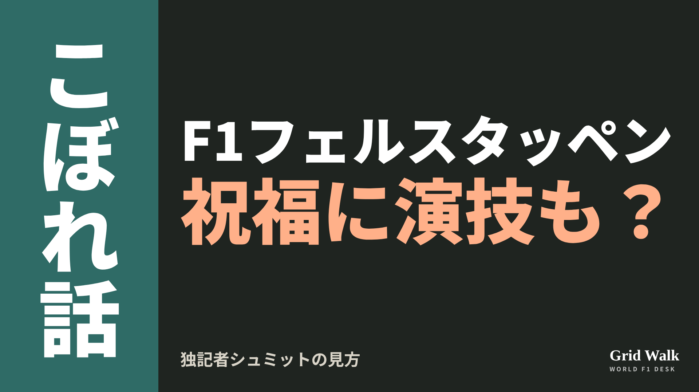<button class="cp dl" data-img="img/x_schmidt-verstappen-half-act-20261113.png" data-name="x_schmidt-verstappen-half-act-20261113.png">ダウンロード</button></li>
<li class="st"><div class="hd"><b>① noteをシェアするときの文</b></div><div class="bx" id="p5x0">アントネッリの王座を祝ったフェルスタッペンに、ドイツの記者シュミットは「喜んでいるように見せている」。担がれたアントネッリは「本物だった」。noteにまとめました #F1jp #フェルスタッペン</div><button class="cp" data-plain="p5x0">コピー</button></li>
<li class="st"><div class="hd"><b>② ①への返信</b></div><div class="bx" id="p5x1">ほかの海外記事も読みたい方は、F1 Grid Walkへ。
https://f1gridwalk.github.io/lens/schmidt-verstappen-half-act-20261113/?utm_source=x&amp;utm_campaign=schmidt-verstappen-half-act-20261113</div><button class="cp" data-plain="p5x1">コピー</button></li>
<li class="st"><div class="hd"><b>③ ②への返信</b></div><div class="bx" id="p5x2">毎日の海外F1ニュースは、日本語でこちらにまとめています。
https://f1gridwalk.github.io/</div><button class="cp" data-plain="p5x2">コピー</button></li>
</ol></section><section class="part" id="p6"><h2><span class="tag">OFF GRID</span>ローソンとリンドブラッドが残留　ツォロフは毎戦帯同で2028年へ</h2><p class="sub">サイトに公開：11:17</p><ol class="steps">
<li class="st im"><div class="hd"><span class="no">1</span><b>見出し画像</b><em>画像</em></div>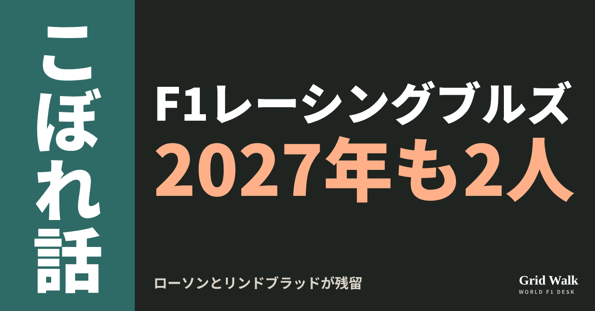<button class="cp dl" data-img="img/racing-bulls-2027-confirmed-20261113.png" data-name="racing-bulls-2027-confirmed-20261113_見出し画像.png">ダウンロード</button></li>
<li class="st"><div class="hd"><span class="no">2</span><b>タイトル</b></div><div class="bx" id="p6t">ローソンとリンドブラッドが残留　ツォロフは毎戦帯同で2028年へ</div><button class="cp" data-plain="p6t">タイトルをコピー</button></li>
<li class="st"><div class="hd"><span class="no">3</span><b>本文</b></div><div class="bx tall" id="p6r"><p>レーシングブルズの2027年の2席に、答えが出ました。チームは11月11日、来季もリアム・ローソンとアービッド・リンドブラッドで戦うと発表しました（RacingNews365）。席を争ったF2のニコラ・ツォロフは、翌12日、レッドブルとレーシングブルズの第3ドライバーに決まりました（RacingNews365）。来年は、すべてのグランプリの週末にチームと一緒にいる役目です。</p><p>チームの発表を伝えた元の記事へのリンクと、ツォロフのFP1の決まりの説明はサイトで → <a href="https://f1gridwalk.github.io/lens/racing-bulls-2027-confirmed-20261113/?utm_source=note&amp;utm_campaign=racing-bulls-2027-confirmed-20261113">https://f1gridwalk.github.io/lens/racing-bulls-2027-confirmed-20261113/?utm_source=note&amp;utm_campaign=racing-bulls-2027-confirmed-20261113</a></p><p>ローソンはドライバーズランキング9位の89点、リンドブラッドは11位の38点です（F1公式）。ローソンの89点のうち14点は、手首をけがしたアイザック・ハジャーの代わりにレッドブルで走った3戦のもの。今季20戦で入賞を逃したのは4戦だけです（Crash.net）。</p><h2>チームは参戦以来の最高位へ</h2><p>コンストラクターズランキングで、レーシングブルズは114点の5位。6位のアルピーヌは69点で、差は45点です（F1公式）。残りは3戦です（Crash.net）。RacingNews365は、チームが2006年にF1に参戦して以来いちばん上の順位に向かっている、と伝えています。</p><blockquote><p>「すばらしいシーズンを一緒に過ごしてきました。チームはとても懸命に働いて速い車を作ってくれて、その車を走らせるのが大好きでした」「コンストラクターズ選手権で5位を争い続ける中、チームにとって歴史的なシーズンの一員でいられるのは最高の気分です」（ローソン、RacingNews365／オランダ）</p></blockquote><p>リンドブラッドは、F2を1シーズン走っただけでF1に上がった新人です（RacingNews365）。</p><blockquote><p>「新人のシーズンで学んだことすべての上に積み上げて、来年を始めるのが待ちきれません」「わくわくする1年になりそうです。リアムと並んで走り続けるのが楽しみです」（リンドブラッド、Crash.net／イギリス）</p></blockquote><h2>ツォロフの2027年</h2><p>19歳のツォロフはブルガリア出身。アルピーヌの育成を離れて2025年からレッドブル育成に入り、今年はメキシコでFP1に出ました（RacingNews365）。</p><p>2027年は、シミュレーターの仕事、旧型車のテスト、新人のFP1が中心です。決勝に2戦を超えて出ていないドライバーを金曜の練習で走らせるFIAの規則の枠で、何度もFP1に出る見込みです（規則の中身は https://f1gridwalk.github.io/deep/rookie-fp1/ ）。RacingNews365は、DTMに移る案も検討されたという観測があったものの、その道は見送られたと書いています。</p><blockquote><p>「2027年は、次はF1でレースができる準備が整うよう、彼に必要な経験と道具と支えを与えることに力を注ぎます」「いまはまだ、ニコラにはF2でやり終えるべき大事な仕事があります」（レッドブルのローレン・メキース代表、RacingNews365／オランダ）</p></blockquote><blockquote><p>「目標ははっきりしています。F1ドライバーになりたい」「来年をその次の一歩への準備に使えるのは、本当にわくわくします」「いまは、F2のシーズンをできるだけいい形で終えることに集中しています」（ツォロフ、RacingNews365／オランダ）</p></blockquote><p>RacingNews365は、ツォロフが2028年にチームのレースの席に入る見込みだと書いています。F2は残り2大会で、ツォロフはまだタイトルを争っています（今季のF2の顔ぶれは https://f1gridwalk.github.io/lens/f2-champions-overlooked-20261111/ ）。</p><p>編集部としては、来季の2人は、2028年の席を目指すツォロフを毎戦そばに置いて走る1年になると見ています（発表前の報道は https://f1gridwalk.github.io/lens/lawson-racing-bulls-stay-20261110/ 、Crash.netの記事の要約は https://f1gridwalk.github.io/news/en-crashnet-lawson-keeps-racing-bulls-seat/ ）。</p><p><strong>レースに出ずに毎戦チームと過ごす1年。あなたは、若手にとって近道だと思いますか、それとも回り道だと思いますか？</strong></p><p>━━━━━━━━━━</p><p><strong>F1 Grid Walk では、世界のF1ニュースを毎日日本語でまとめています。</strong></p><p>海外の記事の要約を、毎日載せています。</p><p><a href="https://f1gridwalk.github.io/">https://f1gridwalk.github.io/</a></p><p>ほかの海外記事も読みたい方は、F1 Grid Walkへ。</p><p><a href="https://f1gridwalk.github.io/lens/racing-bulls-2027-confirmed-20261113/">https://f1gridwalk.github.io/lens/racing-bulls-2027-confirmed-20261113/</a></p><p>━━━━━━━━━━</p><p><a href="https://www.crash.net/f1/news/1110045/1/liam-lawson-wins-race-keep-racing-bulls-seat-f1-2027">出典：Crash.net（イギリス）</a></p><p><a href="https://racingnews365.com/liam-lawson-focusing-on-racing-bulls-history-after-f1-future-wait-ends">出典：RacingNews365（オランダ）</a></p><p><a href="https://racingnews365.com/red-bull-confirm-third-driver-for-2027-after-liam-lawson-arvid-lindblad-decision">出典：RacingNews365（オランダ）</a></p><p><a href="https://racingnews365.com/red-bull-map-out-clear-f1-2028-route-for-exceptional-talent">出典：RacingNews365（オランダ）</a></p><p><a href="https://www.formula1.com/en/results/2026/drivers">出典：Formula 1 公式（イギリス）</a></p><p><a href="https://www.formula1.com/en/results/2026/team">出典：Formula 1 公式（イギリス）</a></p></div><button class="cp" data-rich="p6r">本文をコピー</button></li>
<li class="st"><div class="hd"><span class="no">4</span><b>ハッシュタグ</b></div><div class="bx" id="p6h">#F1 #F1jp #ローソン #リンドブラッド #ツォロフ #レーシングブルズ #メキース #F1移籍 #F1こぼれ話 #OFFGRID</div><button class="cp" data-plain="p6h">タグをコピー</button></li>
</ol><h3 class="xh">X</h3><ol class="steps">
<li class="st im"><div class="hd"><b>X用の画像</b><em>画像</em></div>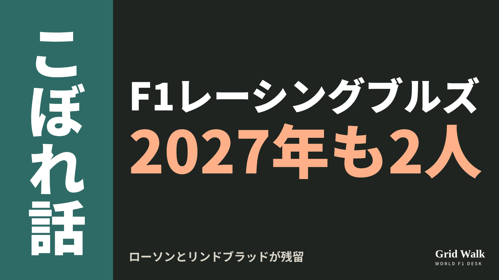<button class="cp dl" data-img="img/x_racing-bulls-2027-confirmed-20261113.png" data-name="x_racing-bulls-2027-confirmed-20261113.png">ダウンロード</button></li>
<li class="st"><div class="hd"><b>① noteをシェアするときの文</b></div><div class="bx" id="p6x0">レーシングブルズは2027年もローソンとリンドブラッド。ツォロフは第3ドライバーとして毎戦帯同し、2028年の席を目指します。noteにまとめました #F1jp #ローソン</div><button class="cp" data-plain="p6x0">コピー</button></li>
<li class="st"><div class="hd"><b>② ①への返信</b></div><div class="bx" id="p6x1">ほかの海外記事も読みたい方は、F1 Grid Walkへ。
https://f1gridwalk.github.io/lens/racing-bulls-2027-confirmed-20261113/?utm_source=x&amp;utm_campaign=racing-bulls-2027-confirmed-20261113</div><button class="cp" data-plain="p6x1">コピー</button></li>
<li class="st"><div class="hd"><b>③ ②への返信</b></div><div class="bx" id="p6x2">毎日の海外F1ニュースは、日本語でこちらにまとめています。
https://f1gridwalk.github.io/</div><button class="cp" data-plain="p6x2">コピー</button></li>
</ol></section><section class="part" id="p7"><h2><span class="tag">OFF GRID</span>ホンダ、ストロールのバッテリー不調は原因まだ不明　土日2日続けて</h2><p class="sub">サイトに公開：11:15</p><ol class="steps">
<li class="st im"><div class="hd"><span class="no">1</span><b>見出し画像</b><em>画像</em></div><button class="cp dl" data-img="img/honda-stroll-battery-20261113.png" data-name="honda-stroll-battery-20261113_見出し画像.png">ダウンロード</button></li>
<li class="st"><div class="hd"><span class="no">2</span><b>タイトル</b></div><div class="bx" id="p7t">ホンダ、ストロールのバッテリー不調は原因まだ不明　土日2日続けて</div><button class="cp" data-plain="p7t">タイトルをコピー</button></li>
<li class="st"><div class="hd"><span class="no">3</span><b>本文</b></div><div class="bx tall" id="p7r"><p>サンパウロGPの週末、アストンマーティンのランス・ストロールの車は、土曜と日曜の2日続けてバッテリーの不具合に見舞われ、決勝はリタイア。HRCの折原伸太郎GMは、何が起きたかは分かっていても、根本の原因はまだ分からないと認めています。F1公式の結果で、ストロールにDNF（リタイア）がついたのは今季13度目です。</p><p>元の記事へのリンクと、メキシコの冷却回路の話へのリンクはサイトで → <a href="https://f1gridwalk.github.io/lens/honda-stroll-battery-20261113/?utm_source=note&amp;utm_campaign=honda-stroll-battery-20261113">https://f1gridwalk.github.io/lens/honda-stroll-battery-20261113/?utm_source=note&amp;utm_campaign=honda-stroll-battery-20261113</a></p><h2>本人は「バッテリーの問題」</h2><p>F1公式の結果では、30周を走ったところでリタイア。motorsport.com ドイツ版によると、そのときは18番手でした。レース後の取材エリアで、原因を聞かれた答えは短いものでした。</p><blockquote><p>「バッテリーの問題」（ストロール、motorsport.com ドイツ版／ドイツ）</p></blockquote><p>13という数には、数え方があります。開幕戦メルボルンは、F1公式の結果では「NC」（15周遅れで完走扱いにならず）で、DNFではありません。motorsport.com ドイツ版もメルボルンを数えていません。入れると完走できなかったレースは14で、英PlanetF1は「今季14回目のDNF」と書きました。</p><h2>何が起きたかは分かる、原因は分からない</h2><p>折原GMは決勝のあと、こう話しました。</p><blockquote><p>「昨日、ランスの車でバッテリーの問題が出て、今日もまたランスの車でバッテリーの問題が出ました」（折原、PlanetF1／イギリス）</p></blockquote><blockquote><p>「いまの時点で、何が起きたかは分かっていますが、根本の原因が何かは分かっていません」（同）</p></blockquote><blockquote><p>「データを調べ、バッテリーも調べます。根本の原因を見つけるには、数週間かかるかもしれません」（同）</p></blockquote><blockquote><p>「でも、データから来年に向けた対策を見つけ、本当の根本の原因も見つけないといけません」「そうしないと、同じ問題を抱え続けることになります」（同）</p></blockquote><p>motorsport.com ドイツ版には、信頼性はシーズン半ばのほうが良く、ここ2、3戦でいくつも問題が出て、最近はおもにバッテリーだったとも話しています。</p><blockquote><p>「いまの時点では、走行距離と関係しているのか、動かし方の条件と関係しているのか、言うのは難しいです」（折原、motorsport.com ドイツ版／ドイツ）</p></blockquote><p>シーズンの初めには、エンジンの振動がバッテリーを何度も傷めていました。ただ同サイトは、今回とはおそらく関係がないと見ています。メキシコシティGPで2台が止まったとき、ホンダが挙げたのはERSの冷却回路でした（コラム https://f1gridwalk.github.io/lens/honda-aston-ers-20261102/ ）。</p><h2>社長の前で、2回</h2><p>PlanetF1によると、インテルラゴスにはホンダの三部敏宏社長も来ていました。折原GMは、社長の前ではいつも気持ちが高まり、熱意をもらえると話したうえで、こう続けています。</p><blockquote><p>「でも一方で、この週末はバッテリーの問題が2回ありました」（折原、PlanetF1／イギリス）</p></blockquote><blockquote><p>「彼は現場で何が起きているかを分かっています。その経験を日本側に持ち帰り、開発も後押ししてくれると思います」（同）</p></blockquote><p>アストンマーティンのチーフトラックサイドオフィサー、マイク・クラックは、ホンダの幹部の来訪を歓迎しています。</p><blockquote><p>「私は会議には出ていませんでした。別の仕事がありますから」（クラック、PlanetF1／イギリス）</p></blockquote><blockquote><p>「これから先、彼らが笑顔で帰れるといいですね」（同）</p></blockquote><p>アストンマーティンは残り3戦でコンストラクターズ10位の7点。1つ上のウィリアムズとは5点差で、7点はすべてアロンソが取ったものです（PlanetF1、F1公式）。</p><p>編集部としては、原因が分かる前に残りのレースを走ることになりそうで、そこで集まるデータも来季への手がかりになると見ています。</p><p><strong>ストロールのバッテリーの問題、来季の開幕までに片づくと思いますか？</strong></p><p>━━━━━━━━━━</p><p><strong>F1 Grid Walk では、世界のF1ニュースを毎日日本語でまとめています。</strong></p><p>海外の記事の要約を、毎日載せています。</p><p><a href="https://f1gridwalk.github.io/">https://f1gridwalk.github.io/</a></p><p>ほかの海外記事も読みたい方は、F1 Grid Walkへ。</p><p><a href="https://f1gridwalk.github.io/lens/honda-stroll-battery-20261113/">https://f1gridwalk.github.io/lens/honda-stroll-battery-20261113/</a></p><p>━━━━━━━━━━</p><p><a href="https://www.planetf1.com/news/honda-investigation-lance-stroll-aston-martin-battery">出典：PlanetF1（イギリス）</a></p><p><a href="https://de.motorsport.com/f1/news/lance-stroll-honda-raetselt-ueber-13-ausfall-der-saison-26111101/3456945/">出典：motorsport.com ドイツ版（ドイツ）</a></p><p><a href="https://www.formula1.com/en/results/2026/races/1299/brazil/race-result">出典：Formula1.com（F1公式）（イギリス）</a></p><p><a href="https://www.formula1.com/en/results/2026/drivers/LANSTR01/lance-stroll">出典：Formula1.com（F1公式）（イギリス）</a></p></div><button class="cp" data-rich="p7r">本文をコピー</button></li>
<li class="st"><div class="hd"><span class="no">4</span><b>ハッシュタグ</b></div><div class="bx" id="p7h">#F1 #F1jp #ホンダ #アストンマーティン #ランスストロール #バッテリー #パワーユニット #サンパウロGP #F1こぼれ話 #OFFGRID</div><button class="cp" data-plain="p7h">タグをコピー</button></li>
</ol><h3 class="xh">X</h3><ol class="steps">
<li class="st im"><div class="hd"><b>X用の画像</b><em>画像</em></div>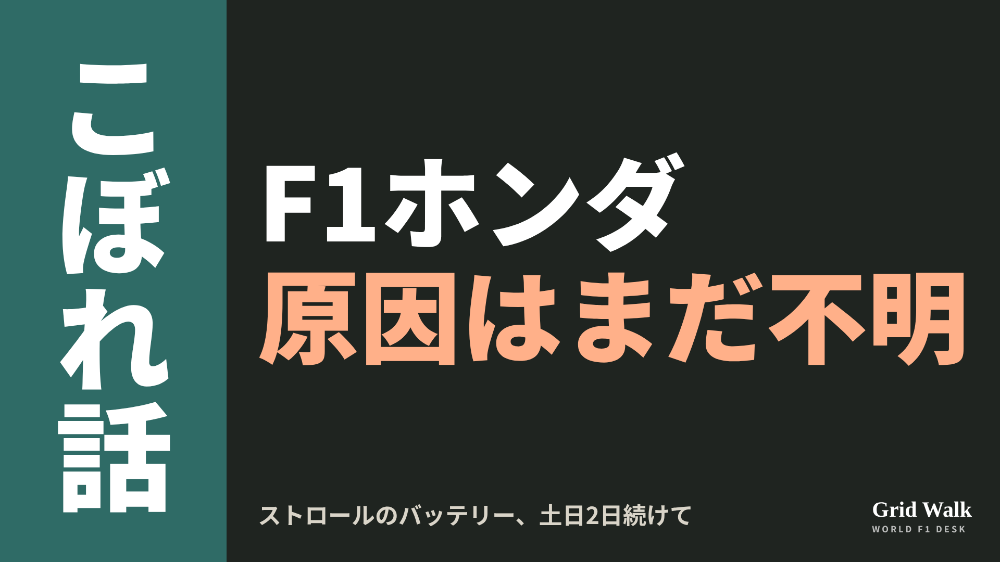<button class="cp dl" data-img="img/x_honda-stroll-battery-20261113.png" data-name="x_honda-stroll-battery-20261113.png">ダウンロード</button></li>
<li class="st"><div class="hd"><b>① noteをシェアするときの文</b></div><div class="bx" id="p7x0">サンパウロでストロールが今季13度目のリタイア。ホンダの折原GMは、何が起きたかは分かるが根本の原因はまだ分からず、特定に数週間かかるかもしれないと話しました。noteにまとめました #F1jp #ホンダ</div><button class="cp" data-plain="p7x0">コピー</button></li>
<li class="st"><div class="hd"><b>② ①への返信</b></div><div class="bx" id="p7x1">ほかの海外記事も読みたい方は、F1 Grid Walkへ。
https://f1gridwalk.github.io/lens/honda-stroll-battery-20261113/?utm_source=x&amp;utm_campaign=honda-stroll-battery-20261113</div><button class="cp" data-plain="p7x1">コピー</button></li>
<li class="st"><div class="hd"><b>③ ②への返信</b></div><div class="bx" id="p7x2">毎日の海外F1ニュースは、日本語でこちらにまとめています。
https://f1gridwalk.github.io/</div><button class="cp" data-plain="p7x2">コピー</button></li>
</ol></section><section class="part" id="p8"><h2><span class="tag">OFF GRID</span>ニューウェイ「多くの共通点」　レッドブル初優勝は加入4年目</h2><p class="sub">サイトに公開：11:16</p><ol class="steps">
<li class="st im"><div class="hd"><span class="no">1</span><b>見出し画像</b><em>画像</em></div>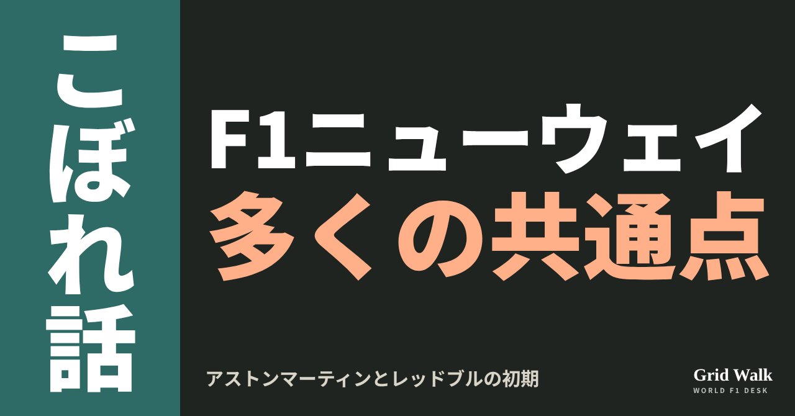<button class="cp dl" data-img="img/newey-aston-red-bull-parallels-20261113.png" data-name="newey-aston-red-bull-parallels-20261113_見出し画像.png">ダウンロード</button></li>
<li class="st"><div class="hd"><span class="no">2</span><b>タイトル</b></div><div class="bx" id="p8t">ニューウェイ「多くの共通点」　レッドブル初優勝は加入4年目</div><button class="cp" data-plain="p8t">タイトルをコピー</button></li>
<li class="st"><div class="hd"><span class="no">3</span><b>本文</b></div><div class="bx tall" id="p8r"><p>アストンマーティンのエイドリアン・ニューウェイ代表が、レッドブルに入ったときと、アストンマーティンに入ったときには「実は多くの共通点がある」と話しました。アストンマーティンはサンパウロGPを終えて7点、11チーム中10位（F1公式）。当時のレッドブルの初優勝は、ニューウェイが加わって4シーズン目でした（F1公式）。</p><p>会見の書き起こしと元の記事へのリンク、ニューウェイの記事の要約はサイトで → <a href="https://f1gridwalk.github.io/lens/newey-aston-red-bull-parallels-20261113/?utm_source=note&amp;utm_campaign=newey-aston-red-bull-parallels-20261113">https://f1gridwalk.github.io/lens/newey-aston-red-bull-parallels-20261113/?utm_source=note&amp;utm_campaign=newey-aston-red-bull-parallels-20261113</a></p><p>言葉は10月23日、アメリカGP金曜のFIA会見から（grandprix.comの書き起こし）。英PlanetF1も11月12日に紹介しました（サイトの要約 https://f1gridwalk.github.io/news/en-planetf1-newey-aston-martin-red-bull-parallels/ ）。</p><h2>きっかけは、ホーナーの言葉</h2><p>会見でAutosportの記者が持ち出したのは、レッドブルの元代表クリスチャン・ホーナーの言葉でした。ホーナーはAutosportの取材で、2006年にニューウェイを迎えたころを笑って振り返り、いまのアストンマーティンをこう見ています。</p><blockquote><p>「エイドリアンは月からやって来たようなものだった」「外から見ていると、歴史が繰り返しているだけのように感じる」（ホーナー、Autosport／イギリス）</p></blockquote><p>ホーナーによると、ニューウェイは「最初の年」の2007年、1周で10分の数秒を稼げるとして、シームレスシフトのギアボックスを望みました。</p><blockquote><p>「でも、4周ほど走ると壊れてしまうんだ！」「組織として、僕らはただ備えが足りず、未熟すぎて、形にできなかった」（ホーナー、Autosport／イギリス）</p></blockquote><h2>ニューウェイ「今回もまったく同じだった」</h2><p>ニューウェイの答えです。</p><blockquote><p>「いや、実はレッドブルに入ったときと、アストンマーティンに入ったときには、多くの共通点があると思う」「どちらのチームも、歴史の中でオーナーが代わり、上の人たちが代わるなど、かなりの混乱があった」「そこで、前にも話したように、みんなが一緒に働くようにして、部門の間の壁を壊し、文化をよくしようとする。今回もまったく同じだった」（ニューウェイ、FIA会見、grandprix.com）</p></blockquote><h2>記録で見るレッドブルの4年と、違い</h2><p>ニューウェイが加わった2006年のレッドブルはコンストラクターズ7位で16点。2007年は5位で24点、2008年は7位で29点でした。2008年のイタリアGPでは、姉妹チームのトロロッソでセバスチャン・ベッテルが勝ち、レッドブルより先に優勝しました。レッドブル自身の初優勝は2009年4月の中国GP（ベッテル）。この年は6勝、153.5点で2位まで上がりました。</p><p>違いもあります。同じ記者は10月30日のAutosportの記事で、レッドブルでは一部のアイデアが当時のチームには革新的すぎた一方、アストンマーティンでは研究が進んでおらず必要に迫られた面が大きい、と書きました。エンジンも当時は2006年がフェラーリ、2007年からルノーのカスタマー（F1公式）で、いまはホンダとのワークス契約です。今季の車について、ニューウェイは同じ会見でこう話しました。</p><blockquote><p>「研究の期間がとても短く、詰め込まれていた」「正直に言うと、（ハイレーキの車には）強みもあったが、弱みもあった」（ニューウェイ、FIA会見、grandprix.com）</p></blockquote><p>編集部としては、共通点は組織づくりに、違いは車とエンジンにあると見ています。Autosportは、長く勝つための材料はそろっているとし、実を結ぶ前にローレンス・ストロール会長がしびれを切らさないことを願う、と結んでいます。</p><p><strong>アストンマーティンの初優勝は、ニューウェイの加入から4年目より早く来ると思いますか？</strong></p><p>━━━━━━━━━━</p><p><strong>F1 Grid Walk では、世界のF1ニュースを毎日日本語でまとめています。</strong></p><p>海外の記事の要約を、毎日載せています。</p><p><a href="https://f1gridwalk.github.io/">https://f1gridwalk.github.io/</a></p><p>ほかの海外記事も読みたい方は、F1 Grid Walkへ。</p><p><a href="https://f1gridwalk.github.io/lens/newey-aston-red-bull-parallels-20261113/">https://f1gridwalk.github.io/lens/newey-aston-red-bull-parallels-20261113/</a></p><p>━━━━━━━━━━</p><p><a href="https://www.grandprix.com/races/united-states-gp-2026-friday-press-conference.html">出典：grandprix.com（イギリス）</a></p><p><a href="https://www.autosport.com/f1/news/why-horner-sees-history-repeating-itself-for-newey-at-aston-martin/10865545/">出典：Autosport（イギリス）</a></p><p><a href="https://www.autosport.com/f1/news/is-history-really-repeating-itself-what-horners-newey-claim-says-about-aston-martin-and-red-bull/10869471/">出典：Autosport（イギリス）</a></p><p><a href="https://www.planetf1.com/news/adrian-newey-compares-aston-martin-red-bull">出典：PlanetF1（イギリス）</a></p><p><a href="https://www.formula1.com/en/results/2026/team">出典：Formula 1 公式（国際）</a></p><p><a href="https://www.formula1.com/en/results/2006/team">出典：Formula 1 公式（国際）</a></p><p><a href="https://www.formula1.com/en/results/2007/team">出典：Formula 1 公式（国際）</a></p><p><a href="https://www.formula1.com/en/results/2008/team">出典：Formula 1 公式（国際）</a></p><p><a href="https://www.formula1.com/en/results/2009/team">出典：Formula 1 公式（国際）</a></p><p><a href="https://www.formula1.com/en/results/2008/races">出典：Formula 1 公式（国際）</a></p><p><a href="https://www.formula1.com/en/results/2009/races">出典：Formula 1 公式（国際）</a></p></div><button class="cp" data-rich="p8r">本文をコピー</button></li>
<li class="st"><div class="hd"><span class="no">4</span><b>ハッシュタグ</b></div><div class="bx" id="p8h">#F1 #F1jp #ニューウェイ #アストンマーティン #レッドブル #ホーナー #ホンダ #F1こぼれ話 #OFFGRID</div><button class="cp" data-plain="p8h">タグをコピー</button></li>
</ol><h3 class="xh">X</h3><ol class="steps">
<li class="st im"><div class="hd"><b>X用の画像</b><em>画像</em></div>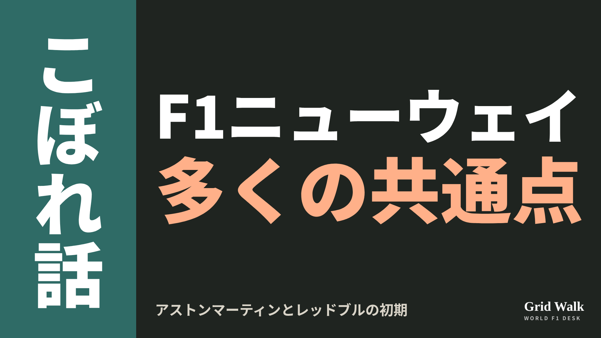<button class="cp dl" data-img="img/x_newey-aston-red-bull-parallels-20261113.png" data-name="x_newey-aston-red-bull-parallels-20261113.png">ダウンロード</button></li>
<li class="st"><div class="hd"><b>① noteをシェアするときの文</b></div><div class="bx" id="p8x0">アストンマーティンの苦しい1年目に、ニューウェイ代表は「多くの共通点」があるとレッドブルの初期を重ねました。レッドブルの初優勝は、ニューウェイの加入から4年目でした。noteにまとめました #F1jp #ニューウェイ</div><button class="cp" data-plain="p8x0">コピー</button></li>
<li class="st"><div class="hd"><b>② ①への返信</b></div><div class="bx" id="p8x1">ほかの海外記事も読みたい方は、F1 Grid Walkへ。
https://f1gridwalk.github.io/lens/newey-aston-red-bull-parallels-20261113/?utm_source=x&amp;utm_campaign=newey-aston-red-bull-parallels-20261113</div><button class="cp" data-plain="p8x1">コピー</button></li>
<li class="st"><div class="hd"><b>③ ②への返信</b></div><div class="bx" id="p8x2">毎日の海外F1ニュースは、日本語でこちらにまとめています。
https://f1gridwalk.github.io/</div><button class="cp" data-plain="p8x2">コピー</button></li>
</ol></section><section class="part" id="p9"><h2><span class="tag">OFF GRID</span>ノリスの無線は駆け引きだった？　元F1ドライバーが推測した理由</h2><p class="sub">サイトに公開：11:22</p><ol class="steps">
<li class="st im"><div class="hd"><span class="no">1</span><b>見出し画像</b><em>画像</em></div>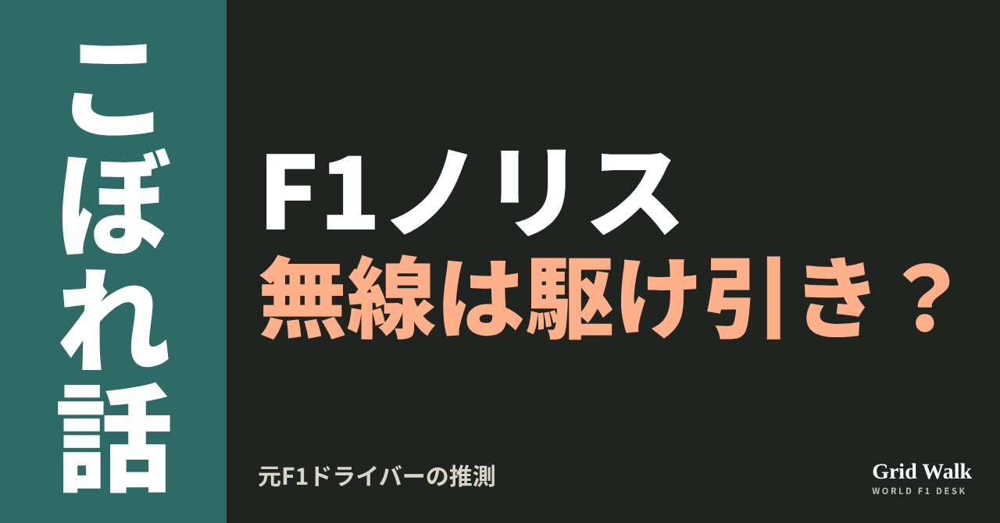<button class="cp dl" data-img="img/norris-radio-bluff-fittipaldi-20261113.png" data-name="norris-radio-bluff-fittipaldi-20261113_見出し画像.png">ダウンロード</button></li>
<li class="st"><div class="hd"><span class="no">2</span><b>タイトル</b></div><div class="bx" id="p9t">ノリスの無線は駆け引きだった？　元F1ドライバーが推測した理由</div><button class="cp" data-plain="p9t">タイトルをコピー</button></li>
<li class="st"><div class="hd"><span class="no">3</span><b>本文</b></div><div class="bx tall" id="p9r"><p>「ノリスは最後まで行くと話している」。サンパウロGPの42周目、レッドブルのトム・ハートが無線でこう伝えると、マックス・フェルスタッペンは「いや、いや。無理だ」と答えました。英PlanetF1が11日に伝えた、放送されなかった無線です。</p><p>フィッティパルディの話を伝えた元の記事と、レッドブルの無線・各媒体のレース記事へのリンクはサイトで → <a href="https://f1gridwalk.github.io/lens/norris-radio-bluff-fittipaldi-20261113/?utm_source=note&amp;utm_campaign=norris-radio-bluff-fittipaldi-20261113">https://f1gridwalk.github.io/lens/norris-radio-bluff-fittipaldi-20261113/?utm_source=note&amp;utm_campaign=norris-radio-bluff-fittipaldi-20261113</a></p><p>このときのランド・ノリス（マクラーレン）の話は、レッドブルを焦らせるためのうそだったのかもしれない――。元F1ドライバーのクリスチャン・フィッティパルディがその可能性を否定しなかった、とオランダのF1Maximaalが11月11日に伝えています。フィッティパルディは1994年までの3シーズン、フットワークとミナルディでF1を走った人です（F1公式）。</p><p>ただ、ノリス本人の無線の言葉は、F1公式、PlanetF1、英Motor Sport誌、英Autosport、マクラーレン公式のどの記事にも出てきません。レッドブルがどう聞いたかは分かっても、ノリスが何と言ったかは確かめられません。</p><h2>無線は、みんなが聞いている</h2><blockquote><p>「マックスは最初の無線で、同じセットのタイヤではレースを最後まで走りきれないと言っていた」「そのあと、ランドの無線が聞こえた。彼は、もしかしたらそれができるかもしれないと言っていた」（フィッティパルディ、F1Maximaal／オランダ。オランダ語から編集部が訳しました）</p></blockquote><blockquote><p>「彼がレッドブルを焦らせるためにうそをついたのかどうか、僕らには分からない」「みんな、お互いの無線を聞いている」（同）</p></blockquote><p>レッドブルの無線では順番は逆で、ハートがノリスの話を伝えたあとに、フェルスタッペンが無理だと答えています。英Autosportのレース記事も「こうした無線の一部は、はったりだった可能性もある」と書きましたが、だれのことかは名指ししていません。</p><h2>45周目のソフトと、4周の差</h2><p>フェルスタッペンは45周目に2回目のピットに入り、新しいソフトに替えました（F1Maximaal、英Motor Sport誌）。</p><blockquote><p>「マックスは危ない状況に入ったと思う。むしろ、とても勇敢だと感じた」「もし3周あとにまた雨が降り始めたら、もう一度ピットに入らなければならなかった」（フィッティパルディ、F1Maximaal）</p></blockquote><p>ノリスは4周あとの49周目に入り、ソフトに替えました（マクラーレン公式）。</p><blockquote><p>「マックスがピットレーンに入ったとき、ランドとの差は11秒か12秒あった。ランドのピットのあと、差はもう6秒しかなかった」（同）</p></blockquote><p>マクラーレン公式のレース報告では、ノリスはピットのあとフェルスタッペンの8秒前で戻っています。英Motor Sport誌のマーク・ヒューズは、フェルスタッペンが速く、マクラーレンはノリスを入れざるをえなかったと見ています。</p><h2>マクラーレンの説明</h2><p>アンドレア・ステラ代表はレース後、F1公式にこう話しました。</p><blockquote><p>「どの時点でも、僕たちが最後まで行けると考えていたことはなかったと思う」（ステラ、F1公式／イギリス。英語から編集部が訳しました）</p></blockquote><p>ノリス本人がこの無線について話した言葉は、見つかっていません。フィッティパルディは、ノリスについてこうも話しています。</p><blockquote><p>「ねえ、彼だって普通に運転がうまいんだよ。うまく走れるのはマックスだけじゃない」（フィッティパルディ、F1Maximaal）</p></blockquote><p>ノリスは最後に14秒602の差で勝ちました（FIA正式結果）。レースの流れは https://f1gridwalk.github.io/lens/norris-sao-paulo-win-20261109/ で読めます。</p><p>編集部としては、本気でも駆け引きでも、ライバルに聞かれる無線はそれだけで相手を迷わせうると見ています。</p><p><strong>ライバルに聞かれていると分かっている無線。あなたがドライバーなら、わざと本音と違うことを言ってみますか？</strong></p><p>━━━━━━━━━━</p><p><strong>F1 Grid Walk では、世界のF1ニュースを毎日日本語でまとめています。</strong></p><p>海外の記事の要約を、毎日載せています。</p><p><a href="https://f1gridwalk.github.io/">https://f1gridwalk.github.io/</a></p><p>ほかの海外記事も読みたい方は、F1 Grid Walkへ。</p><p><a href="https://f1gridwalk.github.io/lens/norris-radio-bluff-fittipaldi-20261113/">https://f1gridwalk.github.io/lens/norris-radio-bluff-fittipaldi-20261113/</a></p><p>━━━━━━━━━━</p><p><a href="https://www.f1maximaal.nl/opinie/oud-f1-coureur-sluit-het-niet-uit-loog-concurrent-max-om-red-bull-in-paniek-te-brengen">出典：F1Maximaal（オランダ）</a></p><p><a href="https://www.planetf1.com/news/max-verstappen-brazilian-grand-prix-2026-team-radio">出典：PlanetF1（イギリス）</a></p><p><a href="https://www.motorsportmagazine.com/articles/single-seaters/f1/mercedes-in-a-spin-as-norris-steers-upgraded-mclaren-to-f1-victory-in-brazil/">出典：Motor Sport（イギリス）</a></p><p><a href="https://www.autosport.com/f1/news/how-norris-prevailed-in-a-swift-errors-tour-of-interlagos/10873155/">出典：Autosport（イギリス）</a></p><p><a href="https://www.mclaren.com/racing/formula-1/2026/sao-paulo-grand-prix/race-report/">出典：マクラーレン公式（イギリス）</a></p><p><a href="https://www.formula1.com/en/latest/article/technically-a-very-interesting-race-stella-reveals-how-norris-and-mclaren-triumphed-at-interlagos.SRa4ORrmm9CcPqhwssoum">出典：Formula 1 公式（イギリス）</a></p><p><a href="https://www.formula1.com/en/latest/article/beyond-the-grid-christian-fittipaldi-on-racing-in-an-f1-dynasty-and-the.1Z2xV1jr3ojeL5098c2JXo">出典：Formula 1 公式（イギリス）</a></p></div><button class="cp" data-rich="p9r">本文をコピー</button></li>
<li class="st"><div class="hd"><span class="no">4</span><b>ハッシュタグ</b></div><div class="bx" id="p9h">#F1 #F1jp #ノリス #フェルスタッペン #マクラーレン #レッドブル #サンパウロGP #チーム無線 #F1こぼれ話 #OFFGRID</div><button class="cp" data-plain="p9h">タグをコピー</button></li>
</ol><h3 class="xh">X</h3><ol class="steps">
<li class="st im"><div class="hd"><b>X用の画像</b><em>画像</em></div>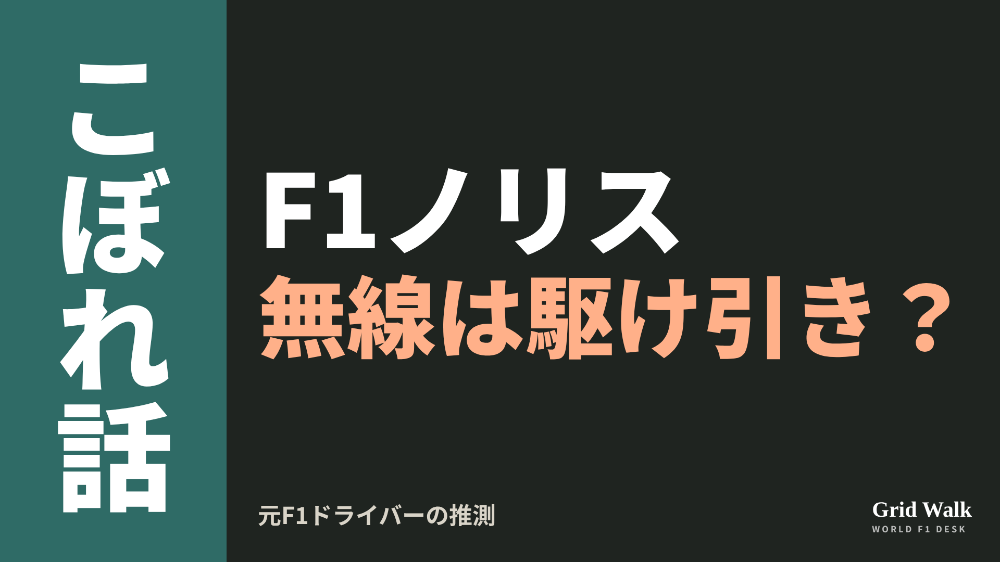<button class="cp dl" data-img="img/x_norris-radio-bluff-fittipaldi-20261113.png" data-name="x_norris-radio-bluff-fittipaldi-20261113.png">ダウンロード</button></li>
<li class="st"><div class="hd"><b>① noteをシェアするときの文</b></div><div class="bx" id="p9x0">サンパウロでレッドブルに届いた「ノリスは最後まで行く話をしている」。元F1ドライバーのフィッティパルディは駆け引きの可能性を推測し、マクラーレンのステラ代表は別の説明。noteにまとめました #F1jp #ノリス</div><button class="cp" data-plain="p9x0">コピー</button></li>
<li class="st"><div class="hd"><b>② ①への返信</b></div><div class="bx" id="p9x1">ほかの海外記事も読みたい方は、F1 Grid Walkへ。
https://f1gridwalk.github.io/lens/norris-radio-bluff-fittipaldi-20261113/?utm_source=x&amp;utm_campaign=norris-radio-bluff-fittipaldi-20261113</div><button class="cp" data-plain="p9x1">コピー</button></li>
<li class="st"><div class="hd"><b>③ ②への返信</b></div><div class="bx" id="p9x2">毎日の海外F1ニュースは、日本語でこちらにまとめています。
https://f1gridwalk.github.io/</div><button class="cp" data-plain="p9x2">コピー</button></li>
</ol></section><section class="part" id="p10"><h2><span class="tag">OFF GRID</span>ボッタスの席に3つの道　TWGはハータ、GMは続投と独メディア</h2><p class="sub">サイトに公開：11:18</p><ol class="steps">
<li class="st im"><div class="hd"><span class="no">1</span><b>見出し画像</b><em>画像</em></div>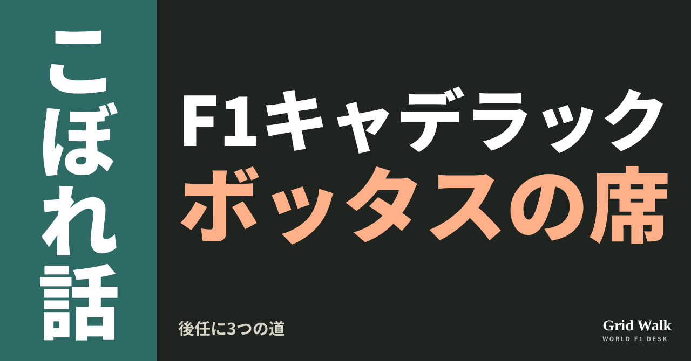<button class="cp dl" data-img="img/cadillac-bottas-replacement-20261113.png" data-name="cadillac-bottas-replacement-20261113_見出し画像.png">ダウンロード</button></li>
<li class="st"><div class="hd"><span class="no">2</span><b>タイトル</b></div><div class="bx" id="p10t">ボッタスの席に3つの道　TWGはハータ、GMは続投と独メディア</div><button class="cp" data-plain="p10t">タイトルをコピー</button></li>
<li class="st"><div class="hd"><span class="no">3</span><b>本文</b></div><div class="bx tall" id="p10r"><p>キャデラックの2027年の2つ目の席には、3つの道がある。ドイツのMotorsport-Total.comが11月12日、そう報じました。アメリカ人ドライバーを望むTWGはコルトン・ハータ、GMの側はバルテリ・ボッタスの続投、そして3人目の名前がメルセデスのリザーブ、フレデリック・ベスティです。チームはまだどれも発表していません（要約はサイトに https://f1gridwalk.github.io/news/de-motorsporttotal-cadillac-bottas-replacement/ ）。</p><p>元のドイツ語の記事へのリンクと、ハータのライセンス40点の回はサイトで → <a href="https://f1gridwalk.github.io/lens/cadillac-bottas-replacement-20261113/?utm_source=note&amp;utm_campaign=cadillac-bottas-replacement-20261113">https://f1gridwalk.github.io/lens/cadillac-bottas-replacement-20261113/?utm_source=note&amp;utm_campaign=cadillac-bottas-replacement-20261113</a></p><p>セルジオ・ペレスの延長はメキシコシティGPの前に発表されましたが、隣の席は発表がありません。記事（ロベルト・キンケーロ記者の記事をドイツ語に訳したもの）は、この席についてチームの中の立場がまとまっていないと書いています。</p><h2>1つ目の道　TWGが推すハータ</h2><p>記事によると、キャデラックはGMとTWGによる事業で、両者は決める段階も思惑も違います。TWGがハータを推すのは、アメリカのチームにアメリカ人ドライバーを入れたいから。ハータはブラジルで、スーパーライセンスを得るのに必要な手続きを終え、最後の形式上のハードルを越えた、と記事は書いています。</p><p>イギリスのThe Raceは11月7日、FIAはハータのFP1の走りに納得していて、資格はいずれ確認される見込みだと伝えました。FIAによる正式な確認の発表は、11月13日の時点で確かめられていません。40点に届いた日のことは、11月7日のこぼれ話に（ https://f1gridwalk.github.io/lens/herta-superlicence-reached-20261107/ ）。</p><h2>2つ目の道　GMはボッタスの続投</h2><p>同じ記事によると、GMにつながる側は技術の取り組みを途切れさせないことを大事にしていて、37歳のボッタスをもう1年残したい考えです。</p><p>F1公式サイトは11月5日、ボッタスは最初に複数年の契約を結んでいるものの、チームは2027年も残すための契約のオプションをまだ使っていないと書きました。サンパウロGPを前に、本人はこう話しています。</p><blockquote><p>「頭の中では、大丈夫なはずです」「それ以外のことは何も聞いていないので、頭の中では、全部うまくいくはずです」（ボッタス、F1公式サイト／イギリス）</p></blockquote><p>ハータのライセンスについては、今年取れなければ、取るのはほぼ無理になると理解していると話し、こう続けました。</p><blockquote><p>「だから、チームは念のためにそれを持っておきたいんだと、かなり確信しています。来年のためとは限りません」「でも僕の側から見れば、何も変わっていません。チームからは、何も変えたくないと言われています」（同）</p></blockquote><p>同じ記事によると、ボッタスはインテルラゴスで、将来は取締役会が決めることで、契約の立場が変わる知らせは受けていないと話しました。メキシコでの「アメリカの上層部」の話は、11月5日のコラムに（ https://f1gridwalk.github.io/lens/cadillac-seat-race-20261105/ ）。</p><h2>3つ目の道　IMSAで評判を上げたベスティ</h2><p>ベスティは24歳のデンマーク人。メルセデスのリザーブで、2023年のF2では2位でした。2025年からはアメリカのIMSAで、アクション・エクスプレスのキャデラックV-Series.R（GTPクラス）に乗っています。</p><p>記事によると、その仕事ぶりへの評判はそろって良く、とくにGMのモータースポーツ担当副社長、エリック・ウォーレンの評価が、GMの中でのベスティの立場を強めたといいます。</p><p>TWGのスポーツの持ち物をめぐる取引のうわさも判断を難しくしている、と記事は書いています。売却の報道は11月5日のこぼれ話に（ https://f1gridwalk.github.io/lens/cadillac-fsg-stake-20261105/ ）。</p><p>編集部としては、3つの名前は、誰がこのチームの行き先を決めるのかを映していると見ています。チームから聞いたというボッタスの言葉どおりになるかは、まだ分かりません。</p><p><strong>キャデラックの2つ目の席、あなたならハータ、ボッタス、ベスティの誰に任せますか？</strong></p><p>━━━━━━━━━━</p><p><strong>F1 Grid Walk では、世界のF1ニュースを毎日日本語でまとめています。</strong></p><p>海外の記事の要約を、毎日載せています。</p><p><a href="https://f1gridwalk.github.io/">https://f1gridwalk.github.io/</a></p><p>ほかの海外記事も読みたい方は、F1 Grid Walkへ。</p><p><a href="https://f1gridwalk.github.io/lens/cadillac-bottas-replacement-20261113/">https://f1gridwalk.github.io/lens/cadillac-bottas-replacement-20261113/</a></p><p>━━━━━━━━━━</p><p><a href="https://www.motorsport-total.com/formel-1/news/cadillac-diese-fahrer-koennten-valtteri-bottas-ersetzen-26111207">出典：Motorsport-Total.com（ドイツ）</a></p><p><a href="https://www.formula1.com/en/latest/article/in-my-head-it-should-be-okay-bottas-offers-update-on-cadillac-f1-future-amid-herta-reports.Kr1u7QDCDvIeoyCjP1CBL">出典：F1公式サイト（イギリス）</a></p><p><a href="https://www.the-race.com/formula-1/herta-finally-clears-his-last-f1-superlicence-hurdle/">出典：The Race（イギリス）</a></p></div><button class="cp" data-rich="p10r">本文をコピー</button></li>
<li class="st"><div class="hd"><span class="no">4</span><b>ハッシュタグ</b></div><div class="bx" id="p10h">#F1 #F1jp #キャデラック #ボッタス #コルトンハータ #ベスティ #F1移籍 #サンパウロGP #F1こぼれ話 #OFFGRID</div><button class="cp" data-plain="p10h">タグをコピー</button></li>
</ol><h3 class="xh">X</h3><ol class="steps">
<li class="st im"><div class="hd"><b>X用の画像</b><em>画像</em></div>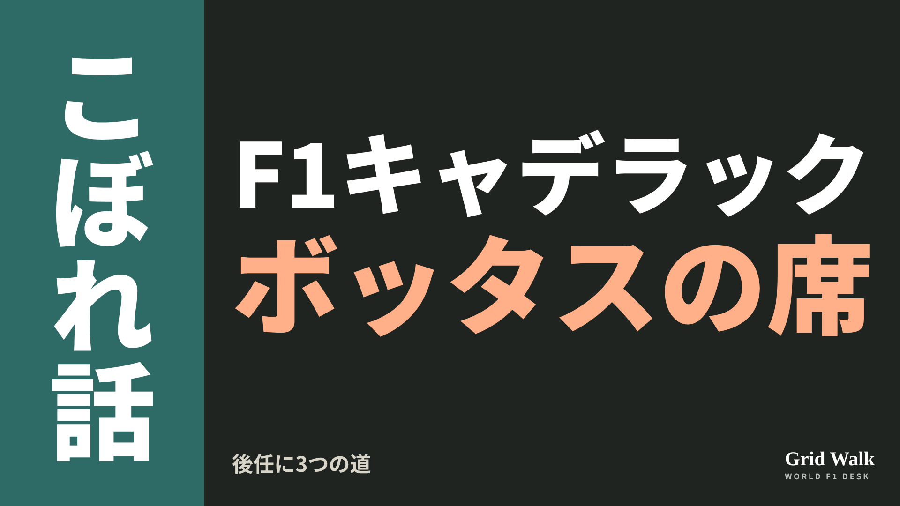<button class="cp dl" data-img="img/x_cadillac-bottas-replacement-20261113.png" data-name="x_cadillac-bottas-replacement-20261113.png">ダウンロード</button></li>
<li class="st"><div class="hd"><b>① noteをシェアするときの文</b></div><div class="bx" id="p10x0">キャデラックのボッタスの席に3つの道。TWGはハータ、GMの側は続投寄り、そしてベスティ。ドイツのMotorsport-Totalが伝えた見取り図をnoteにまとめました #F1jp #キャデラック</div><button class="cp" data-plain="p10x0">コピー</button></li>
<li class="st"><div class="hd"><b>② ①への返信</b></div><div class="bx" id="p10x1">ほかの海外記事も読みたい方は、F1 Grid Walkへ。
https://f1gridwalk.github.io/lens/cadillac-bottas-replacement-20261113/?utm_source=x&amp;utm_campaign=cadillac-bottas-replacement-20261113</div><button class="cp" data-plain="p10x1">コピー</button></li>
<li class="st"><div class="hd"><b>③ ②への返信</b></div><div class="bx" id="p10x2">毎日の海外F1ニュースは、日本語でこちらにまとめています。
https://f1gridwalk.github.io/</div><button class="cp" data-plain="p10x2">コピー</button></li>
</ol></section></main><script>
function done(b,msg){const t=b.dataset.t||b.textContent;b.dataset.t=t;b.classList.add('ok');b.textContent=msg||'コピーしました';setTimeout(()=>{b.classList.remove('ok');b.textContent=t},2000)}
function selectEl(el){const r=document.createRange();r.selectNodeContents(el);const s=getSelection();s.removeAllRanges();s.addRange(r)}
async function rich(el,b){
  try{await navigator.clipboard.write([new ClipboardItem({'text/html':new Blob([el.innerHTML],{type:'text/html'}),'text/plain':new Blob([el.innerText],{type:'text/plain'})})]);done(b);return}catch(e){}
  selectEl(el);let ok=false;try{ok=document.execCommand('copy')}catch(e){}
  if(ok){getSelection().removeAllRanges();done(b)}else{done(b,'選択しました。コピーしてください')}}
async function plain(el,b){
  try{await navigator.clipboard.writeText(el.innerText);done(b);return}catch(e){}
  selectEl(el);let ok=false;try{ok=document.execCommand('copy')}catch(e){}
  if(ok){getSelection().removeAllRanges();done(b)}else{done(b,'選択しました。コピーしてください')}}
let dlns=null;(async()=>{try{dlns=await window.claude?.use?.("downloads")}catch(e){dlns=null}})();
async function img(src,b){
  b.dataset.t=b.dataset.t||b.textContent;
  if(!dlns){try{dlns=await window.claude?.use?.("downloads")}catch(e){}}
  if(!dlns){b.textContent='ダウンロードできませんでした';setTimeout(()=>{b.textContent=b.dataset.t},3500);return}
  try{const blob=await fetch(src).then(r=>r.blob());b.textContent='保存の確認を開いています…';
    await dlns.save({filename:b.dataset.name,data:blob});done(b,'ダウンロードしました')}
  catch(e){const c=e&&e.code;b.textContent=c==='declined'?'キャンセルしました':c==='rate_limited'?'少し待ってからもう一度押してください':'ダウンロードできませんでした';setTimeout(()=>{b.textContent=b.dataset.t},3500)}}
document.querySelectorAll('.cp').forEach(b=>b.addEventListener('click',()=>{
  if(b.dataset.rich)rich(document.getElementById(b.dataset.rich),b);
  else if(b.dataset.plain)plain(document.getElementById(b.dataset.plain),b);
  else img(b.dataset.img,b)}));
</script>